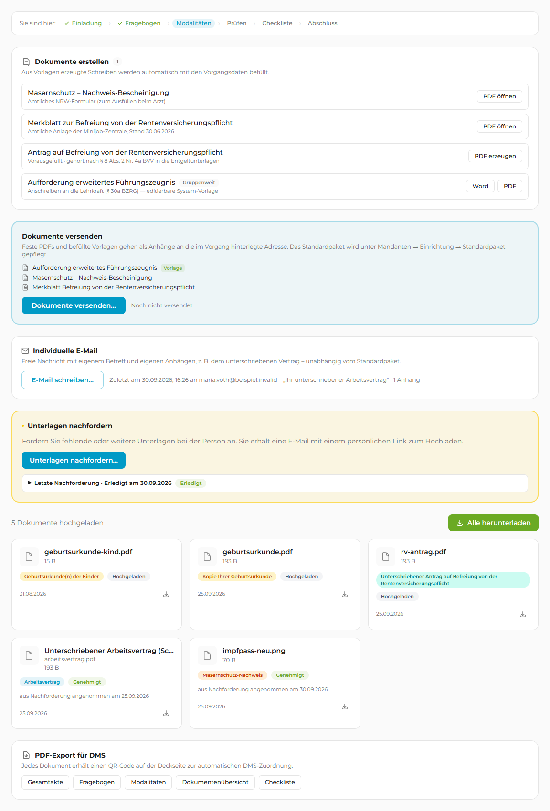
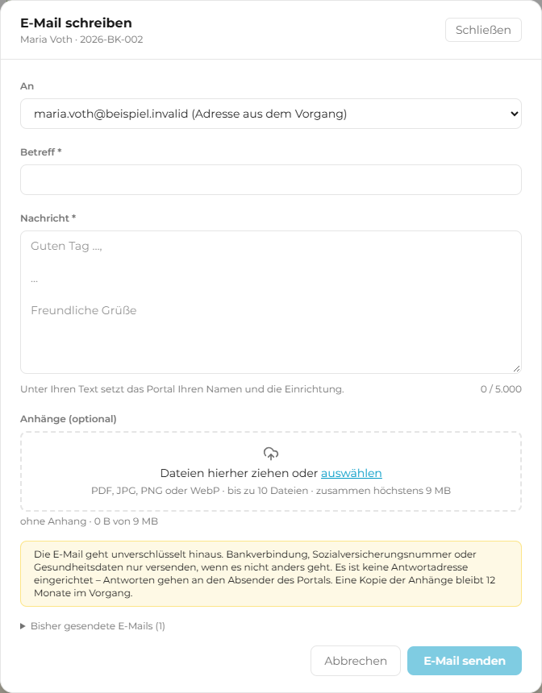
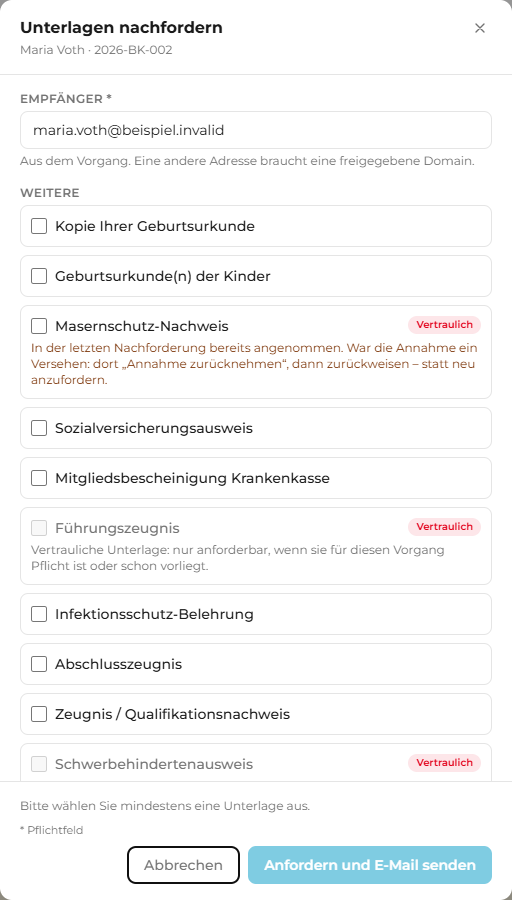
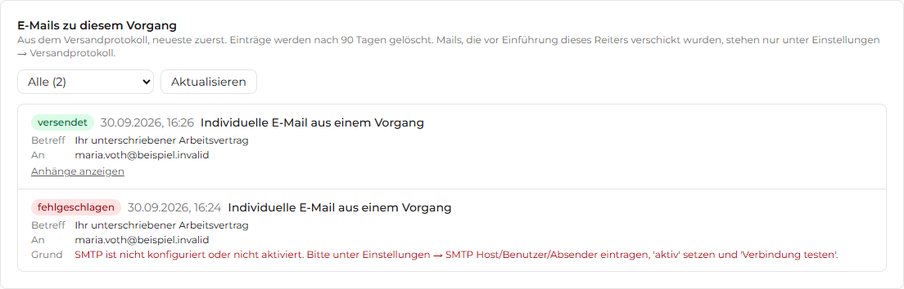
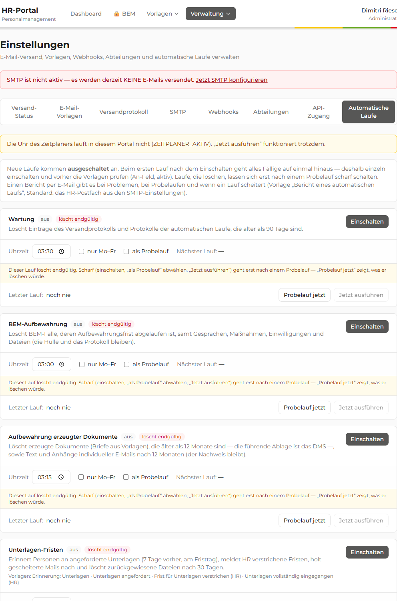

0Was Fassung 3 ergänzt Fassung 3
Seit Fassung 2 sind vier Funktionen dazugekommen, die HR jeden Tag sieht: Unterlagen nachfordern (Paket 4, deployt 30.09.), der Reiter „E-Mails“ in jedem Vorgang und die automatischen Läufe in den Einstellungen (beide deployt 30.09.) sowie die individuelle E-Mail mit Anhang (Paket 3, vor dem Deploy). Fachlich sind alle vier fertig und getestet. Gestalterisch wurden sie im heutigen Stil gebaut, also mit genau den Mustern, die dieser Plan ablösen will. Fassung 3 nimmt sie in den Plan auf, damit sie beim Umbau nicht ein zweites Mal angefasst werden müssen. Alles andere aus Fassung 2 gilt unverändert.
| Thema | Was Fassung 3 ergänzt | Wo |
|---|---|---|
| Blickwinkel | Alle neuen Bildschirme wurden aus Sicht einer neuen Kollegin im Personalbüro geprüft: Was kann ich hier tun, was ist der eine nächste Klick, was passiert danach? | 4 J, Persona |
| Echte Bilder | Die „Vorher“-Seite ist erstmals ein Screenshot aus dem Portal, keine Nachzeichnung. Das Skript scripts/ux-screenshots.js erzeugt sie neu und ist der Grundstock für das Screenshot-Skript aus V0. | 4 J–N, screenshots/ |
| Reiter Dokumente | Drei Wege, etwas an die Person zu schicken (Paket, E-Mail, Nachforderung), stehen heute in drei verschieden gefärbten Karten. Zielbild: eine Gruppe „Senden“ mit drei Zeilen, darunter „Liegt vor“. | 4 J |
| E-Mail schreiben | Der Dialog aus Paket 3 wird zum E-Mail-Blatt wie in Apple Mail, mit Textbausteinen für die häufigsten Anlässe. | 4 K |
| Unterlagen anfordern | Der Dialog aus Paket 4 schlägt vor, was fehlt, statt alle Arten als Liste anzubieten; Frist mit einem Klick. | 4 L |
| Verlauf statt Reiter „E-Mails“ | Mails und Ereignisse eines Vorgangs in einem Verlauf, Fehler in Alltagssprache. | 4 M |
| Automatische Läufe | Schalter wie in den iOS-Einstellungen, gruppiert nach Zweck; Einzelheiten auf einer Detailseite; der Probelauf als geführter Schritt. | 4 N |
| LOGA und Stammblatt | Monatlicher LOGA-Dump als eigene Datenbank, das Portal liest nur; danach das Stammblatt auf der Personenseite (ersetzt die Excel-Blätter A und B) und das schrittweise Verlagern. Dump als SQL-Server-Datenbank bei CREDO, Sichten-Datenbank daneben; Stammblatt zuerst (E21), Jahresrechnung Personal im Portal (E18). Mit kritischer Durchsicht: Lippe gehört nicht ins Portal, die Personalnummer sitzt im Modell falsch, keine Zwei-Faktor-Anmeldung, die Jahresrechnung nur einmal rechnen. | 4L, O |
| Umsetzung | Neues Paket U10 „Kommunikation im Vorgang“, U6 um die automatischen Läufe erweitert, LOGA-Strang L0–L4, Roadmap und Summe nachgezogen, Entscheidungen E12–E22 (E15 und E16 am 01.10.2026 entschieden). | 5, 6, 8 |
Was Fassung 2 gegenüber Fassung 1 geändert hat
Fassung 1 hatte drei Fehler, die sich nicht durch Feinschliff beheben ließen: Sie kannte die bestehende Roadmap nicht, sie verstieß gegen das CI und sie dachte „A bis Z“ nur innerhalb eines Vorgangs. Fassung 2 korrigiert das und benennt ehrlich, was noch nicht geprüft ist. Kennzeichnung im Dokument: neu und geändert.
| Thema | Fassung 1 | Fassung 2 |
|---|---|---|
| Startseite | Neue Seite „Heute“ mit eigenen Regeln (gelbe Stufe „Warnung“, „wartet auf Sie“) | Startseite setzt auf Paket 6 „Offene Aufgaben“ auf (Änderungsplan Fassung 6, entschieden 24.09.2026): dieselbe Definition von „offen“ und „überfällig“, keine gelbe Stufe, keine persönliche Zuweisung, BEM nie. Dazu Fristen aus den Modulen und „wartet auf HR“ aus der Prozessleiste (Abschnitt 4 B). |
| Farben | CREDO-Farben semantisch (grün fertig, gelb wartet, rot kritisch, blau „Weg“) UND als Einrichtungspunkt in derselben Zeile; abgedunkelte Töne als „Akzent“ | CI-Farben nur für CREDO-Linie und Einrichtungen. Zustandsfarben aus einer funktionalen Palette (keine Markenelemente). Eine Interaktionsfarbe: CI-Grau. Kein Einrichtungspunkt neben einer Statuspille (Abschnitt 3). |
| Schrift | „Montserrat bleibt“ ohne Frage | Das CI sieht ITC Avant Garde Gothic für Headlines vor. Neue Entscheidung E7: Webfont-Lizenz oder dokumentierte Abweichung (Abschnitt 6). |
| A bis Z | Prozessleiste innerhalb eines Vorgangs | Zusätzlich Personenseite und Suche über alle Module (Abschnitt 4 D2, Paket U8). Das Modell Employee und die Verknüpfung employeeId an allen sechs Vorgangstypen existieren bereits, sind aber leer. |
| Prozessleiste | Linear, „eine Komponente für alle sieben“ ohne Beleg | Zustände „übersprungen“, „Verzweigung“ und „Schleife“, dazu ein Zeitachsen-Modus für Mutterschutz, Elternzeit und BEM. Belegt aus Sichtprüfung für drei Module; die übrigen vier werden in der Vorarbeit V0 mit Seed-Daten geprüft. |
| Beschäftigte nach dem Absenden | Einmal-Abschlussseite mit erfundenen Zusagen („5 Werktage“, „Vertrag per E-Mail“) | Der Magic-Link wird nach der Abgabe zur dauerhaften Statusseite, zusammen mit Paket 4 „Unterlagen nachfordern“. Alle Ablauftexte kommen vom Personalbüro; im Mockup als Platzhalter markiert. |
| Rechte | nicht behandelt | „Jetzt dran“-Knopf und Aktionen nur für HR_EDIT_ROLES; Vorgesetzte nur lesen plus eigene Checkliste; BEM-Beauftragte landen weiter in BEM (Middleware). Rollen aus permissions.ts, nicht aus CLAUDE.md (dort veraltet). |
| E-Mails und PDFs | nur als Risiko-Zeile | Eigener Abschnitt 4 I und Paket U9. Der Mail-Rahmen existiert (email-layout.ts), sein Knopf ist CREDO-Blau, im Portal ist der Primärknopf grau. |
| Grenzen der Bewertung | „20 Seiten durchgeklickt“ | Abschnitt 2 nennt, was nicht gesehen wurde: vier Module ohne Daten, keine Interaktion, nur Super-Admin, nur 1440 und 390 px, keine Barrierefreiheitsprüfung. |
| Vorgehen | U0 bis U7 nacheinander, 33 bis 40 Tage | Vorarbeit V0 (Prototyp-Tag mit dem Personalbüro, Seed-Daten, Screenshots aller Module, 1366×768), dann senkrechter Schnitt durch ein Pilotmodul, Vorschau-Schalter je Benutzer. Aufwand neu gerechnet: Kern 46 bis 58 Tage, mit Erweiterungen und Querschnitt 61 bis 79 (Abschnitt 5). |
| Eigene Fehler in den Mockups | Emoji im Leerzustand, farbige Pillen ohne Text am Handy, deutsche Token-Namen, Mandanten-Adresse per Namen, erfundene Aufbewahrungsfrist | alle behoben |
1Auf einen Blick
Das Portal ist fachlich stark: Es bildet sieben Personalprozesse ab, führt Führungskräfte und Abteilungen per Link ohne Anmeldung durch ihre Aufgaben und protokolliert alles. Was fehlt, ist eine gemeinsame Sprache der Oberfläche. Jedes Modul wurde zu einer anderen Zeit gebaut und sieht anders aus. Wer ein Modul kennt, muss das nächste neu lernen. Und die Frage „Wo stehen wir, was kommt als Nächstes?“ beantwortet jede Seite anders; über den Lebenslauf einer Person hinweg beantwortet sie niemand.
Sechs Kernbefunde
- Sechs verschiedene Fortschrittsanzeigen. Onboarding und Offboarding haben einen senkrechten Schritt-Stepper, Vertragsende eine Pill-Leiste, Verbeamtung zeigt zwei Anzeigen gleichzeitig (Phasen-Zeitleiste und Workflow-Stepper), BEM eigene Kreise, Elternzeit und Mutterschutz einen waagerechten Stepper mit Banner. Der Nutzer hat kein einheitliches Bild von „A bis Z“.
- Die Startseite ist das Onboarding-Modul, nicht der Arbeitstag. Wer sich anmeldet, sieht Diagramme und Kennzahlen des Onboardings. Überfällige Vorgänge aus Vertragsende oder Offboarding sind erst nach zwei Klicks sichtbar. Paket 6 der Roadmap schließt diese Lücke für Checklisten-Aufgaben; die Startseite dieses Plans baut darauf auf.
- Kein roter Faden über die Module. neu Eine Person durchläuft Onboarding, Vertragsende, Verbeamtung, Elternzeit und Austritt als fünf unverbundene Vorgänge. Es gibt keine Suche über alle Module und keine Personenseite, obwohl das Datenmodell (
Employee,employeeIdan jedem Vorgang,/api/employees) dafür angelegt ist. - Drei Farbsysteme laufen parallel. CREDO-Tokens (448 Treffer credo-grün), Tailwind-Standardfarben (blau-600, grün-600, violett) und hart eingetragene Hex-Werte. Buttons sind je nach Seite grau, blau, grün oder CREDO-grün. „Abgeschlossen“ ist im Offboarding grün, im Vertragsende violett. Dazu kommt: Die CI-Farben sind zugleich die Farben der Einrichtungen, taugen also nicht als Zustandsfarben.
- Der Vorgangskopf betont die Nummer, nicht den Menschen. Der auffälligste Chip im Kopf ist
2026-BK-002in Schreibmaschinenschrift; der Name steht klein in Zeile zwei. Keine Breadcrumb, kein Hinweis auf das Modul, die Seitenbreite springt je Modul. - Rückmeldungen kommen aus dem Browser, nicht aus dem Portal. 28-mal
confirm(), 4-malalert(), kein Toast-System, keine Skelett-Ladezustände. Zehn Radix-Pakete (Dialog, Toast, Tabs …) sind installiert, aber nirgends genutzt.
Sechs Leitprinzipien für das Zielbild
Was bewusst bleibt. Montserrat als Fließtextschrift, die CREDO-Linie als Kopfabschluss, Grau (#575756) als Primärfarbe der Verwaltung, keine Farbverläufe. Die gesamte Fachlogik (Status-Abgleich, Spuren, Abteilungsaufgaben, Dokumentenpaket, Erinnerungs-Cron) bleibt unangetastet; der Plan verändert Darstellung, Anordnung und Rückmeldungen. Die Schrittdaten für die Prozessleiste existieren (uebersicht-schritte.ts, process-workflow-stepper.tsx), die Definition von „offen“ und „überfällig“ kommt aus Paket 6. Nichts davon wird ein zweites Mal erfunden.
2Wie bewertet wurde, und was nicht
Die Chrome-Erweiterung war in der Sitzung nicht verbunden. Deshalb wurde der lokale Entwicklungsserver gestartet und jede Seite mit Headless-Chrome über das DevTools-Protokoll gerendert, Desktop und Handy. Für die Portal-Seiten wurde ein lokales Sitzungs-Token signiert (nur Dev-Datenbank, kein Passwort). Parallel hat eine Code-Inventur alle Seiten, Komponenten, Farbklassen, Stepper und Dialoge gezählt. Für Fassung 2 kamen der Änderungsplan Fassung 6, die CI-Richtlinie und permissions.ts dazu.
| Bereich | Gerendert | Wichtigste Beobachtung |
|---|---|---|
| Anmeldung | /login | Ruhig und sauber. Kein Weg „Passwort vergessen“ auf der Seite. |
| Dashboard | Onboarding, Offboarding, Vertragsende (Desktop + Handy) | Startseite = Onboarding. Diagramme vor der Liste. Handy: Reiterleiste läuft über, Tabelle abgeschnitten. |
| Vorgangs-Detail | Onboarding (2), Offboarding, Vertragsende, BEM-Liste (leer) | Drei verschiedene Kopfzeilen, drei verschiedene Fortschrittsanzeigen auf vier Seiten. Onboarding-Übersicht 1.760 px hoch. |
| Öffentliche Formulare | Personalfragebogen Schritt 10 (Desktop + Handy), Modalitäten (Link abgelaufen), Abteilungslink und Exit-Interview (ungültig) | Schritt-Pills laufen rechts aus dem Bild; am Handy nur grüne Haken ohne Titel. Fehlerseite „Token abgelaufen“ ohne Ausweg. |
| Verwaltung | Einstellungen, Checklisten, Formulare, Brief-Vorlagen, Mandanten, Benutzer, Audit-Log | Einstellungen 4.900 px hoch, 59 rote Punkte. Mandanten-Tabelle mit 7 Knöpfen je Zeile, abgeschnitten. |
Grenzen dieser Bewertung neu
Das Folgende wurde nicht gesehen oder geprüft. Alles, was der Plan dazu sagt, ist aus dem Code abgeleitet und muss in der Vorarbeit V0 mit echten Bildern bestätigt werden.
| Nicht geprüft | Grund | Folge für den Plan | Nachholen in |
|---|---|---|---|
| Verbeamtung, BEM, Elternzeit, Mutterschutz (Detailseiten, Formulare) | Dev-Datenbank ohne Vorgänge dieser Module | Aussagen zu Steppern, Bannern und Kopfzeilen sind Code-Befunde; die Prozessleiste ist für diese Module nicht belegt | V0: Seed-Skript mit je einem Vorgang, dann Screenshots |
| Interaktion (Dialoge „Neuer Vorgang“, Validierung, Fehlermeldungen, Hover, Fokus, Tastatur) | Standbilder statt Klickpfade | Fehler- und Formularverhalten nur aus dem Code bekannt | V0: fünf Klickpfade Ende zu Ende aufzeichnen |
| Rollen außer Super-Admin | Token für eine Rolle | Was Einrichtungsleitung, Vorgesetzte und BEM-Beauftragte sehen, ist nur aus permissions.ts und der Middleware abgeleitet | V0: je Rolle ein Token, dieselben Seiten |
| Bildschirm 1366×768 (üblicher Schul-Laptop) | nur 1440 und 390 px | Die klebende Prozessleiste könnte dort zu viel Höhe kosten; deshalb der Kompaktmodus beim Scrollen | V0 |
| E-Mails (59 Ereignisse), PDF-Exporte, Word-Briefe | nicht geöffnet | Abschnitt 4 I beschreibt nur den Rahmen aus email-layout.ts; Wortlaut und Ton der Vorlagen sind ungeprüft | U9 |
| Barrierefreiheit (Kontrast, Tastatur, Screenreader) | kein Werkzeug eingesetzt | Radix bringt Fokus und ARIA mit; ob die Farben der Palette überall AA erreichen, ist gerechnet, nicht gemessen | U0 (axe im Jest-Lauf) |
| Echte Datenmengen | 2 Onboardings, 7 Vertragsenden | Startseite und Listen bei 16 Mandanten und 40 Einträgen ungetestet; deshalb „meine Mandanten“ als Vorbelegung (Tabelle UserOrgAssignment) | V0 mit Seed-Daten in Produktionsgröße |
| Arbeitsweise des Personalbüros | Handbuch nicht gelesen, niemand befragt | Der Plan ist nach Bildschirmen geordnet, nicht nach Top-Aufgaben. Ob HR die Vorgangsnummer in Listen braucht, ist offen (E9) | V0: Prototyp-Tag |
| Neuerungen vom 30.09./01.10. Fassung 3 | Screenshots aus dem Entwicklungsportal, 1440 px, Rolle Super-Admin, Testvorgang 2026-BK-002; SMTP dort aus | Der Reiter „E-Mails“ zeigt deshalb eine fehlgeschlagene Mail mit Rohtext des Mailers; genau das ist Befund M3. Die Upload-Seite der Person (Paket 4) wurde nicht fotografiert: Ihr Link steht nur als Prüfsumme in der Datenbank und lässt sich ohne echte Mail nicht öffnen. Sie folgt dem Muster aus Abschnitt E und gehört zu U5. | V0: Upload-Seite über einen Testvorgang mit eigener Adresse |
| LOGA-Testdump und Stammblatt Fassung 3 | Testdump nicht gesehen; Stammblatt nur aus zwei ausgefüllten Excel-Mustern (Stand 2024) und der Gap-Analyse vom Mai 2026 | Feldnamen und Quellen in Abschnitt 4L sind aus der Gap-Analyse abgeleitet, nicht gegen den Dump geprüft. Die Mockups enthalten nur erfundene Werte. | L0: Testdump auswerten, Feldabgleich mit echten Spalten |
3Designsprache „Klarer Weg“
Bevor einzelne Seiten umgebaut werden, braucht das Portal ein kleines, verbindliches Vokabular. Die Tokens ersetzen die drei parallelen Farbsysteme; die Komponenten ersetzen 27 selbst gebaute Overlays, 146 Inline-SVGs und sechs Stepper.
Farbe: Marke, Einrichtung, Zustand, Interaktion sind vier verschiedene Dinge geändert
Fassung 1 hat die vier CREDO-Farben als Zustandsfarben genutzt. Das geht nicht: Laut CI sind Gelb, Grün, Rot und Blau zugleich die Farben von Gymnasium, Gesamtschule, GS Minderheide und GS Haddenhausen. Ein gelber Punkt vor „Gymnasium“ neben einer gelben Pille „wartet“ wäre mehrdeutig. Fassung 2 trennt die vier Rollen:
| Rolle | Heute (gefunden im Code) | Zielbild | Warum |
|---|---|---|---|
| Marke | CREDO-Linie im Kopf, Logo | unverändert: Linie unter dem Kopf, Wortmarke links | Markenelemente sind nicht verhandelbar. |
| Einrichtung | 10 Tokens --color-einrichtung-* definiert, 0-mal genutzt | Nur dort, wo keine Statusfarbe daneben steht: als Kürzel-Chip in Listen (GYM, neutral grau), als farbige Kante in Filter-Chips und in der Auswertung | Die 16 Mandanten sind das Ordnungsprinzip; sie dürfen aber nicht wie ein Zustand aussehen. |
| Zustand | 8 Onboarding-Statusfarben, X-100/X-800-Badges, „Abgeschlossen“ grün oder violett | Funktionale Palette, keine CI-Farben: ok #2e7d32, wait #b45309, critical #b42318, info #1d6fa5, neutral grau. Immer mit Text, nie nur Farbe. | Zustandsfarben sind Systemfarben wie in iOS, keine Markenelemente. Vier Farben kann man lernen, zwölf nicht. |
| Interaktion | bg-primary grau, blue-600, green-600, credo-gruen, #5a9420 | Eine Farbe: CI-Grau #575756 für Primärknopf, aktive Reiter, aktiven Schritt; Links unterstrichen in derselben Farbe | Apple nutzt eine Interaktionsfarbe. Bei der Verwaltung ist das Grau. Blau scheidet aus, weil es Haddenhausen gehört. |
| Grund und Fläche | #fafafa, weiße Karten mit Rahmen, farbige Kacheln | surface #f5f5f4, card #fff mit Haarlinie rgba(0,0,0,.08), kein Schatten außer Dialog und Toast | Ruhe entsteht durch wenige Flächenstufen. |
| Text | #1a1a1a, muted #737373, gray-500/600/700 gemischt | ink #1c1c1a, ink-2 #6b6b67, ink-3 #9a9a95 | Drei Stufen: Inhalt, Erläuterung, Beschriftung. |
#f5f5f4#ffffff + Haarlinie#575756#2e7d32#b45309#b42318#1d6fa5Token-Namen bleiben englisch wie die vorhandenen (--color-primary), damit kein zweites Vokabular entsteht. Die alten Status-Tokens bleiben als Alias, bis U3 sie ablöst. Die Palette wurde für AA-Kontrast auf Weiß gerechnet (alle Textfarben über 4,5:1); gemessen wird sie in U0 mit axe.
Typografie: Montserrat für Text, die Headline-Frage ist offen geändert
Das CI nennt Montserrat für Fließtext und ITC Avant Garde Gothic für Logos und Headlines. Das Portal nutzt Montserrat für alles; das Token --font-heading ist definiert und einmal verwendet. Das ist eine Abweichung, die entweder behoben (Webfont-Lizenz, die Schrift ist kommerziell) oder ausdrücklich festgehalten wird. Entscheidung E7. Unabhängig davon wird die Skala verbindlich:
| Rolle | Größe / Gewicht | Einsatz |
|---|---|---|
| Seitentitel | 28 px / 700, Laufweite −1 % | Name der Person, Name der Seite. Genau einer je Seite. |
| Gruppentitel | 11 px / 600, Versalien, Laufweite +6 % | Über jeder gruppierten Liste. Ersetzt die Karten-Überschriften mit grünem Punkt. |
| Inhalt | 14 px / 400–500 | Werte, Listeneinträge. |
| Erläuterung | 12 px / 400, ink-2 | Zweite Zeile in Listen, Hinweise. |
| Zahlen und Daten | tabular-nums, immer TT.MM.JJJJ | Heute mischen sich „26.8.2026“ (47-mal toLocaleDateString) und „26.08.2026“ (107-mal formatDate). Eine Funktion für alle. |
Heute gibt es fünf Radius-Stufen (1.400 Treffer). Zielbild: 8 px für Bedienelemente, 12 px für Gruppen und Dialoge. Sonst nichts.
Komponenten, die es nur einmal geben darf
Alle entstehen in src/components/ui/ auf Basis der bereits installierten Radix-Pakete. Bestehende Seiten werden schrittweise umgestellt (Paket U0).
| Baustein | Ersetzt heute | Verhalten |
|---|---|---|
| Prozessleiste | process-workflow-stepper, prozess-stepper, workflow-stepper (Verbeamtung), Vertragsende-Pills, BEM-Kreise, beurteilung-status-stepper | Waagerecht, klebt beim Scrollen oben und schrumpft dabei auf eine Zeile (Höhe auf 768-px-Bildschirmen). Zustände: erledigt, aktiv, parallel, kommend, blockiert, übersprungen, verzweigt, Schleife. Zeitachsen-Modus für datumsgetriebene Module. Darunter „Jetzt dran“ mit einem Knopf, nur für Rollen mit Schreibrecht. Klick auf einen Schritt springt zum Reiter. |
| Suche neu | je Modul ein Suchfeld | Ein Feld im Kopf (Strg+K): Personen, Vorgangsnummern, Mandanten über alle Module. Ergebnis zeigt Modul, Status und nächsten Schritt. |
| Seitenkopf | vier verschiedene Kopfzeilen | Breadcrumb, Titel, Unterzeile (Modul · Einrichtung · Nummer · Datum), Statuspille, rechts ein Primärknopf und ein „…“-Menü. Breite überall 6xl. |
| Gruppe | card mit grünem Punkt, kv-Zeilen | Versal-Beschriftung über einer weißen Gruppe mit Haarlinien-Zeilen. Optional ein Knopf rechts. |
| Statuspille | drei Badge-Stile, immer-blaue Badges in Elternzeit/Mutterschutz | Punkt plus Text, fünf funktionale Varianten. Text aus dem Label-Katalog, nie der Rohcode. |
| Aufgaben-Badge (Paket 6) | „14d“-Alter, „3/12“ grau | Grau „5 offen“, rot „5 offen · 2 überfällig“, kein Badge, wenn nichts offen ist. Genau wie in Paket 6 entschieden; hier nur im neuen Stil gezeichnet. |
| Segment-Schalter | Reiterleisten (Dashboard, Checklisten, Einstellungen) | Wie iOS Segmented Control, mit Zähler. Am Handy waagerecht scrollbar. |
| Datumsfeld neu | native „tt.mm.jjjj“-Felder, je Browser anders | Ein Feld mit Kalender, Eingabe TT.MM.JJJJ, relative Anzeige daneben („in 4 Tagen“). |
| Dialog (Radix) | 27 selbst gebaute Overlays, 28 confirm() | Titel als Frage, ein Satz Folgen, zwei Knöpfe. Zerstörende Aktion rot und rechts. Escape schließt, Fokus bleibt gefangen. |
| Toast (Radix) | 4 alert(), Inline-Erfolgstexte | Unten mittig, 5 Sekunden, mit „Rückgängig“ wo möglich. Fehler bleiben stehen; Netzfehler bieten „Erneut versuchen“. |
| Skelett, Leerzustand | „Lade Vorgänge…“ Spinner, leere Tabellen | Skelett-Zeilen in der Form der Liste. Leerzustand mit Symbol, Satz und dem nächsten sinnvollen Knopf. |
| Symbole | 146 Inline-SVGs, Emojis (🔒 ⛔ ♿ 📊) | lucide-react (ist installiert), 16 px, Strichstärke 1,75. Keine Emojis, auch nicht in Leerzuständen. |
4Bereich für Bereich: Vorher und Nachher
Die Mockups sind verkleinerte Nachbildungen der gerenderten Seiten (Vorher) und Entwürfe des Zielbilds (Nachher). Rote Nummern markieren Befunde, grüne Nummern die Antwort darauf; die Erklärung folgt unter dem Paar. Texte, die das Personalbüro liefern muss, sind als Platzhalter markiert.
A · Rahmen und Navigation: Wo bin ich?
Maria Voth 3
Warum
- Keine Ortsangabe. Nur „← Zurück“; man weiß nicht, ob man in Onboarding oder Offboarding ist. Nachher: Breadcrumb „Vorgänge › Onboarding › Name“, Adresse mit dem Modul im Pfad (
/vorgaenge/onboarding/…); die Kennung bleibt die UUID, alte Adressen leiten weiter (E4). - Emoji als Bedeutungsträger. „🔒 BEM“ sieht in jedem System anders aus. Nachher: Schriftzug plus Zähler-Pille; die Vertraulichkeit erklärt die BEM-Seite selbst.
- Die Nummer ist lauter als der Mensch. Nachher: Name als einzige Überschrift, die Nummer bleibt lesbar in der Unterzeile, weil HR sie am Telefon braucht (E9). Die Einrichtung steht als neutraler Kürzel-Chip, nicht als Farbpunkt (Abschnitt 3).
- Sieben Chips, kein Knopf. Nachher: eine Statuspille, EIN Primärknopf mit der nächsten Handlung, Rest im „…“-Menü (Als geprüft markieren, Abschließen, Exporte). Für Rollen ohne Schreibrecht fehlt der Knopf, das Menü zeigt nur Exporte.
- Rollen heißen falsch. Der Kopf kennt drei Rollen; Einrichtungsleitung und Vorgesetzte erscheinen als „Sachbearbeiter“. Nachher: ein Rollen-Katalog in
permissions.tsliefert überall denselben Namen (dort stehen die echten sechs Rollen; CLAUDE.md nennt noch ADMIN/HR_STAFF/VIEWER und wird korrigiert). - Keine Suche über alle Module. neu Jede Liste hat ihr eigenes Suchfeld. Nachher: ein Feld im Kopf (Strg+K) findet Personen, Nummern und Mandanten in allen sieben Modulen (Abschnitt D2).
Seitenliste: was oben steht und was darunter liegt Fassung 3
Mit E3 (entschieden 01.10.2026) bleibt die obere Leiste, begrenzt auf sechs Punkte. Die Tabelle ordnet jede Seite des Portals einem Punkt zu. „Heute“ nennt die Adresse im Code (src/app/(portal)/); die neuen Adressen folgen E4.
| Punkt oben | Seiten darunter | Heute | Kommt mit |
|---|---|---|---|
| Start | Handlungsbedarf: Aufgaben, Fristen der Module, nächster Schritt bei HR | gibt es nicht; Startseite ist die Onboarding-Liste | U3 (nach Paket 6) |
| Aufgaben | Offene Checklisten-Aufgaben aller laufenden Vorgänge | gibt es nicht | Paket 6 |
| Vorgänge | Listen je Modul: Onboarding, Offboarding, Vertragsende, Verbeamtung, Elternzeit, Mutterschutz; Auswertung (Diagramme, CSV) | /dashboard | U1, Listen U3 |
| Vorgangs-Detail je Modul | /dashboard/[id], /dashboard/offboarding/[id], /dashboard/contract-end/[id], /dashboard/civil-service/[id], /dashboard/elternzeit/[id], /dashboard/mutterschutz/[id] | U2, U4, U10 | |
| Personen | Personenseite mit allen Vorgängen; Stammblatt und Jahresrechnung als Reiter bzw. Unterseite, keine eigenen Punkte | gibt es nicht | L3 (Stammblatt zuerst, E21), U8, L3b |
| BEM | Fallliste, Fall, Statistik | /dashboard/bem, /dashboard/bem/[id], /dashboard/bem/statistik | U2, U4 (zuletzt) |
| Verwaltung | Vorlagen: Formulare (mit Vorschau), Brief-Vorlagen, Checklisten, Exit-Interview, Zeugnis-Bewertung, Beurteilungs-Vorlagen, BEM-Vorlagen | /vorlagen, /vorlagen/vorschau/[id], /brief-vorlagen, /checklisten, /exit-interview-vorlagen, /zeugnis-vorlagen, /beurteilungs-vorlagen, /bem-vorlagen | U6 |
| Mandanten: Liste; je Mandant Dokumentenpaket, Datenschutz, Vertragsende, Elternzeit, BEM-Ansprechpartner (Seitenleiste) | /mandanten, /mandanten/[id]/starterpaket, …/dsgvo-config, …/vertragsende-config, …/elternzeit-config, …/bem-ansprechpartner | U6 | |
| Einstellungen (Seitenleiste, darin Schulferien und Automatische Läufe), Benutzer, Audit-Log | /einstellungen, /einstellungen/schulferien, /benutzerverwaltung, /audit-log | U6 | |
| ohne Punkt | Anmeldung, Konto einrichten | /login, /konto-einrichten/[token] | U6 |
| außerhalb (Link per E-Mail) | Fragebogen, Modalitäten, Abteilungsaufgaben (Onboarding, Offboarding), Unterlagen, Exit-Interview, Zeugnis-Bewertung, Vertragsformular, Verbeamtung (Antrag, Beurteilung, Kenntnisnahme, Echtheitsprüfung), Elternzeit (Antrag, endgültiger Antrag, Leitung), BEM-Einwilligung | /fragebogen, /modalitaeten, /onboarding-tasks, /offboarding-tasks, /unterlagen, /exit-interview, /zeugnis-bewertung, /vertrag-formular, /civil-service-…, /verify/…, /elternzeit-…, /bem/einwilligung | U5 |
Zwei Folgen für U1. „Vorlagen“ ist heute ein eigener Punkt, den auch die Sachbearbeitung sieht (Formulare, Brief-Vorlagen); „Verwaltung“ sehen nur HR-Leitung und Super-Admin. Wandern die Vorlagen unter „Verwaltung“, zeigt der Punkt der Sachbearbeitung genau diese beiden Einträge, sonst nichts. Bis Start, Aufgaben und Personen gebaut sind, stehen oben vier Punkte wie im Mockup (Vorgänge · BEM · Vorlagen · Verwaltung); die Vorlagen ziehen erst um, wenn der fünfte Punkt dazukommt.
B · Startseite: Handlungsbedarf nach den Regeln von Paket 6 geändert
Paket 6 „Offene Aufgaben“ (Änderungsplan Fassung 6) legt fest: eine Seite „Aufgaben“ mit allen offenen Checklisten-Aufgaben laufender Vorgänge nach Dringlichkeit, ein Badge je Vorgang, ein roter Zähler im Kopf; eine einzige Definition von „offen“ und „überfällig“; kein Gelb; keine persönliche Zuweisung; BEM nie; Vertragsende hat keine Checkliste. Die Startseite dieses Plans erfindet nichts davon neu. Sie stellt drei Dinge untereinander, die es dann gibt: die Aufgaben aus Paket 6, die Fristen der Module (Vertragsende-Ampel, Elternzeit-Fristen, Mutterschutz-Beginn) und die Vorgänge, deren nächster Schritt bei HR liegt (aus der Prozessleiste).
2Überfällige Vorgänge
| Vorgangs-ID | Name / E-Mail | Einrichtung | Status | Fragebogen | Vorgesetzter | Datum |
|---|---|---|---|---|---|---|
| 2026-BK-002 | Maria Vothmaria.voth@beispiel.invalid | Berufskolleg (767) | In Bearbeitung | Schritt 10 von 10 · Zusammenfassung 4 | — | 26.8.2026 29d |
| 2026-HLX-001 | dimitri.riesen@fes-minden.de | HELEX.IT GmbH (747) | In Bearbeitung | Schritt 1 von 9 | noch nicht begonnen | 26.5.2026 121d |
Warum
- Der Einstieg ist ein Modul. Wer sich anmeldet, landet im Onboarding-Reiter. Nachher: eine Startseite über alle Module, nach Dringlichkeit sortiert. Vorbelegung „Meine Mandanten“ aus
UserOrgAssignment, weil bei 16 Mandanten sonst 40 Zeilen stehen. Einrichtungsleitung und Vorgesetzte sehen ohnehin nur ihre Mandanten; BEM-Beauftragte landen weiter in BEM. - Aufgaben sind unsichtbar, bis man den Vorgang öffnet. Nachher: die ersten drei Aufgaben aus Paket 6 (überfällig zuerst, dann fällig), Link zur vollen Seite „Aufgaben“. Definition, Badge-Farben und Ausnahmen (kein Gelb, keine Zuweisung, BEM nie) kommen aus Paket 6 und werden hier nur gezeichnet.
- Fristen liegen in den Modulen. Die Vertragsende-Ampel (Kritisch, Warnung, Abgelaufen), die Fristen der Elternzeit und der Mutterschutz-Beginn haben je eigene Regeln. Nachher: eine Gruppe „Fristen“, die diese Regeln unverändert liest; nur Kritisch und Abgelaufen erscheinen auf der Startseite, Warnung bleibt im Modul.
- Niemand sieht, welche Vorgänge auf HR warten. Nachher: Vorgänge, deren aktiver Schritt die Zuständigkeit HR hat (aus
ProzessStand, Abschnitt D). „Wartet auf HR“ ist Team-Sicht, keine persönliche Zuweisung. - Diagramme vor der Arbeit, Kacheln als Filter. Nachher: Module als Liste mit Zählern und dem Paket-6-Badge; Auswertung ist ein Link, die Diagramme bleiben, eine Etage tiefer.
C · Vorgangsliste eines Moduls
| Vorgangs-ID ↕ | Name | Einrichtung | Vertragsende ▲ | Frist | Status ↕ |
|---|---|---|---|---|---|
| VE-2026-GYM-006 | B1 Testb1@beispiel.invalid | Gymnasium (737) | 5.7.2026 Abgelaufen | — | Rückmeldung: Übernahme 3 |
| VE-2026-GYM-002 | Tom Testtom.test@beispiel.invalid | Gymnasium (737) | 31.7.2026 Abgelaufen | — | Keine Übernahme |
| VE-2026-GYM-001 | Petra Probepetra.probe@beispiel.invalid | Gymnasium (737) | 30.9.2026 | Kritisch | Vertrag erstellt |
| VE-2026-GYM-005 | Conf Testconf@beispiel.invalid | Gymnasium (737) | 31.12.2026 | Warnung | Anfrage beim Vorgesetzten 4 |
Vertragsende
| Person | Nr. | Nächster Schritt | Frist | Status | |
|---|---|---|---|---|---|
| Petra ProbeGYMGymnasium | VE-2026-GYM-001 3 | Unterschriebenen Vertrag erfassenbei HR 4 | in 4 Tagen30.09.2026 | Kritisch | › |
| Vera VerifikationGYMGymnasium | VE-2026-GYM-003 | Verlängerungsvertrag erstellenbei HR | in 4 Tagen30.09.2026 | Kritisch | › |
| Conf TestGYMGymnasium | VE-2026-GYM-005 | Rückmeldung der Führungskraftbei Vorgesetzte/n · seit 12 Tagen | in 97 Tagen31.12.2026 | Warnung | › |
| Tom TestGYMGymnasium | VE-2026-GYM-002 | Offboarding anlegenbei HR | abgelaufen31.07.2026 | Keine Übernahme | › |
| Maria VothBKBerufskolleg | 2026-BK-002 | Vorgesetzten-Link erstellenbei HR · Fragebogen bei der Person seit 29 Tagen | 4 offen · 1 überfällig | In Bearbeitung | › |
Warum
- Sechs farbige Kacheln als Filter. Je Modul andere Farben für dieselbe Bedeutung. Nachher: ein Segment-Schalter mit vier Sichten (alle, kritisch, bei HR, bei anderen). Die Status-Verteilung bleibt in der Auswertung.
- Der wichtigste Knopf ist umgebrochen. Nachher: Primärknopf immer oben rechts im Seitenkopf, in jedem Modul an derselben Stelle.
- Vorgangsnummer und E-Mail belegen zwei breite Spalten. geändert Fassung 1 hat die Nummer gestrichen. Das war voreilig: Am Telefon nennt jemand die Nummer, und die Suche allein hilft nicht beim Abgleich mit einer Liste. Nachher: Nummer als schmaler Chip, E-Mail erst auf der Detailseite. Ob HR das so will, klärt der Prototyp-Tag (E9).
- Kein „nächster Schritt“, kein „bei wem“. Der Status „Rückmeldung: Übernahme“ verrät nicht, dass HR jetzt einen Vertrag erstellen muss. Nachher: Mini-Prozessleiste plus die nächste Handlung und wer sie schuldet. Fristen relativ mit Datum darunter, immer TT.MM.JJJJ.
- Aufgaben-Badge nach Paket 6. In Modulen mit Checkliste steht das Badge aus Paket 6 in der Zeile (grau „offen“, rot „überfällig“, kein Gelb, kein Badge ohne offene Aufgabe). Vertragsende hat keine Checkliste, deshalb dort keins.
D · Vorgangs-Detail: eine Prozessleiste für alle sieben Module
Das ist das Herzstück des Plans. Heute beantworten sechs verschiedene Bauteile die Frage „Wo stehen wir?“; im Zielbild ist es eines. Fassung 2 räumt ein, dass nicht jeder Prozess eine gerade Linie ist, und gibt der Leiste dafür drei zusätzliche Zustände und einen zweiten Modus.
Person
Vorgesetzten-Link
Danach: Fragebogen abwarten (Person, seit 29 Tagen) → Daten prüfen (HR)
Warum
- Kein Gesamtbild. Sechs Schritte in drei Kästen auf 1.760 px Höhe; „Erledigt“ steht unter „Kommend“. Nachher: eine Zeile, alle sechs Schritte, Klammer für parallele Schritte. Die Leiste klebt oben und schrumpft beim Scrollen, damit sie auf einem 768-px-Laptop nicht die halbe Höhe kostet.
- Der nächste Schritt ist nicht formuliert. Nachher: „Jetzt dran“ ist ein Satz mit einem Knopf, „Danach“ die zwei folgenden Stationen mit Zuständigkeit. Der Knopf erscheint nur für
HR_EDIT_ROLES; Vorgesetzte sehen den Satz, aber keinen Knopf (außer bei ihrer eigenen Checkliste). - Dieselbe Handlung an drei Orten. Nachher: ein Ort (Gruppe „Führungskraft“), der Knopf in der Prozessleiste öffnet genau diesen Dialog. Die Gruppe „Person“ verlinkt auf die Personenseite (D2).
- Ausgegraute Knöpfe ohne Grund. Nachher: Ein deaktivierter Knopf trägt seinen Grund als Tooltip, und die Gruppe sagt in einem Satz, was fehlt.
Nicht jeder Prozess ist eine gerade Linie geändert
Fassung 1 hat die Leiste für Onboarding, Offboarding und Vertragsende gezeigt und behauptet, sie passe für alle sieben Module. Das stimmt nur mit vier Ergänzungen: übersprungen (Offboarding: Exit-Interview abgelehnt, Zeugnis nicht gewünscht), Verzweigung (Vertragsende: Übernahme oder Offboarding; der nicht gewählte Weg bleibt als gestrichelter Hinweis sichtbar), Schleife (Verbeamtung: eine zurückgewiesene Beurteilung wiederholt die Phase, die Leiste zählt „2. Durchlauf“) und ein Zeitachsen-Modus für Mutterschutz, Elternzeit und BEM, wo nicht Schritte, sondern gesetzliche Fristen um ein Datum herum den Stand bestimmen. Die vier Module ohne Sichtprüfung werden in V0 mit Seed-Daten gegen diese Entwürfe gehalten.
Führungskraft fehlt noch; IT und Facility können sofort angeschrieben werden
Frist 30.09.2026, in 4 Tagen · sonst Entfristungsrisiko (§ 15 Abs. 5 TzBfG)
Blockiert: amtsärztlicher Termin noch nicht eingetragen (Phase II)
Beginn des Mutterschutzes in 23 Tagen · Aufgaben zur Geburt werden erst ab Status „Aktiv“ fällig (Paket 6)
Zustände der Prozessleiste (alle aus vorhandenen Daten ableitbar): erledigt (grün, Datum), aktiv (grauer Ring, Zuständigkeit, Fortschritt), parallel (zwei aktive mit Klammer, wie heute filter statt find), kommend (grau), blockiert (Ausrufezeichen mit Grund), übersprungen (gestrichelt, durchgestrichen), verzweigt (gewählter Weg in der Linie, der andere als gestrichelter Hinweis), Schleife („2. Durchlauf“), abgebrochen/pausiert (aus prozess-stepper.tsx). Zeitachse: Marken sind Termine, „Heute“ ist ein roter Strich, die Färbung zeigt vergangen, laufend, kommend. Der bestehende Test process-workflow-stepper.test.tsx wird übertragen; die Regel „Parallel-Satz nur bei zwei aktiven Spuren“ bleibt als Test bestehen. Die Datenfunktion ProzessStand ist rein und liefert auch die Zeile für Listen und Startseite.
D2 · Die Person als roter Faden: Suche und Personenseite neu
„Von A bis Z“ endet heute an der Grenze des Vorgangs. Dieselbe Person taucht als Onboarding 2024, Vertragsende 2026 und Elternzeit 2027 auf, ohne dass eine Seite das zusammenführt. Das Datenmodell ist dafür vorbereitet: Employee (Personalnummer aus LOGA, Dienst- und Privatadresse, Import-Verfolgung) und ein optionales employeeId an Onboarding, Offboarding, Vertragsende, Verbeamtung, Mutterschutz und Elternzeit, samt /api/employees. In der Dev-Datenbank ist die Tabelle leer; ob sie in Produktion gefüllt ist, prüft V0.
| 2024-GYM-014 | Petra Probepetra.probe@beispiel.invalid | Abgeschlossen |
| VE-2026-GYM-001 | Petra Probepetra.probe@beispiel.invalid | Kritisch |
| EZ-2027-GYM-002 | Petra Probep.probe@fes-gym.de 2 | Angelegt |
Petra Probe
Warum
- Die Klammer fehlt. Wer wissen will, ob für Petra Probe schon ein Onboarding lief oder ob parallel eine Elternzeit angelegt ist, öffnet drei Reiter. Nachher: eine Personenseite mit dem Zeitstrahl aller Vorgänge, erreichbar aus jeder Suche und aus der Gruppe „Person“ eines Vorgangs. Kein Schema-Umbau, das Feld
employeeIdgibt es an allen sechs Vorgangstypen. - Dieselbe Person, verschiedene Adressen. Onboarding und Exit-Interview kennen die private, Elternzeit und Zeugnis die dienstliche Adresse. Nachher: Die Personenseite führt beide; die Zuordnung eines Vorgangs zur Person läuft über Personalnummer, sonst E-Mail plus Geburtsdatum, sonst Vorschlag mit Bestätigung durch HR. Nie automatisch stillschweigend, weil eine falsche Zuordnung zwei Personalakten vermischt.
- Datenschutz. Die Personenseite zeigt nur Vorgänge, die der Benutzer ohnehin sehen darf (
canAccessProcessje Vorgang), BEM nie (versiegelte Akte, eigener Zugriffsweg). Sensible Felder (IBAN, Steuer-ID, SV-Nummer) erscheinen dort nicht; sie bleiben im Fragebogen-Reiter des jeweiligen Vorgangs.
E · Öffentliche Formulare: Fragebogen, Modalitäten, Abteilungslinks
Diese Seiten sehen Menschen, die das Portal nie zuvor gesehen haben: neue Beschäftigte, Führungskräfte, Abteilungen. Hier zählt „Wo bin ich, wie lange noch, was passiert danach?“ am meisten. Geprüft wurde der Fragebogen (Schritt 10, Desktop und Handy); die Modalitäten waren mit abgelaufenem Link nicht zu sehen, sie folgen im Code demselben Muster (Speichern je Schritt bei „Weiter“).
Warum
- Die Schritt-Pills laufen aus dem Bild. Zehn Pills passen nicht in 1.440 px, am Handy bleiben grüne Haken ohne Titel. Nachher: Fortschrittsbalken plus „Schritt 10 von 10 · Zusammenfassung“ in Worten; alle Schritte hinter „Alle Schritte“.
- Die Zusammenfassung ist eine 4.300-px-Wand ohne Rückweg. Nachher: Jeder Abschnitt ist eine Gruppe mit „Ändern“; fehlende Pflichtangaben stehen markiert an ihrer Stelle.
- Speichern nur mit „Weiter“. Fragebogen und Modalitäten speichern je Schritt (
saveStepData); ein geschlossener Tab verliert den angefangenen Schritt. Nachher: feldweises Speichern mit Uhrzeit im Kopf, nach dem Muster der Verbeamtungsformulare. Die Gates inauth.tsbleiben unverändert. - Der Absende-Knopf ist grau und am Seitenende. Nachher: Fußleiste klebt unten; der Knopf erklärt im deaktivierten Zustand, was fehlt. Und: „Pruefen“ wird „Prüfen“.
Nach dem Absenden: der Link wird zur Statusseite geändert
Fassung 1 hatte eine Einmal-Abschlussseite mit Zusagen, die ich erfunden hatte („innerhalb von 5 Werktagen“, „Vertrag per E-Mail“, Vertragsbeginn aus den unbestätigten Modalitäten). Fassung 2: Der Magic-Link ist nach der Abgabe ohnehin lesend und dient mit Paket 4 dem Nachreichen. Er wird zur dauerhaften Statusseite, die nur zeigt, was das Portal sicher weiß. Jeder Satz, der einen Ablauf verspricht, ist ein Platzhalter, den das Personalbüro füllt; er wird als Vorlage pro Mandant gepflegt, nicht im Code.
Ihr Fragebogen ist am 25.09.2026 um 14:05 Uhr bei der Personalabteilung eingegangen. Bestätigung ONB-2026-8F3A.
DokumentenVersand)Warum
- „Sie können dieses Fenster schließen“ ist eine Sackgasse. Nachher: Eingangszeit, dann nur Stationen, die das Portal aus eigenen Daten kennt (Prüfung läuft oder erledigt, Dokumentenpaket versendet mit Datum, Vertragsbeginn erst nach HR-Prüfung). Keine Dauer-Zusage, kein Versandweg, den das Portal nicht kennt. Die Zeitleiste ist dieselbe Prozessleiste wie im Portal, senkrecht und ohne interne Schritte.
- Nachreichen am selben Ort. Die offenen Nachweise stehen mit Knopf auf der Statusseite; das ist genau die Funktion von Paket 4. Beide Pakete werden gemeinsam gebaut (U5).
Gleiche Regeln für alle zwölf öffentlichen Seiten
- Ein Rahmen (
FormularRahmen): CREDO-Wortmarke, Titel, für wen, Speicherstatus, Fortschritt in Worten. Heute baut jede Seite ihren Kopf selbst;vertrag-formularzeichnet die CREDO-Linie sogar doppelt. - Ein Fortschrittsmuster statt fünf: Balken plus „Schritt x von y · Titel“. Das Exit-Interview zeigt heute zwei Zähler, die Zeugnis-Bewertung „bewertet x / y“.
- Fehlerseiten mit Ausweg: „Link nicht gültig · Token abgelaufen“ wird zu „Dieser Link ist abgelaufen. Bitte wenden Sie sich an die Personalabteilung“ mit der Antwortadresse aus der SMTP-Konfiguration.
- Abteilungslink-Seite (
aufgaben-seite.tsx) bekommt dieselben Gruppen: Kopf mit Person, Einrichtung, Bezugsdatum, „x von y erledigt“ als Balken, Aufgaben als Zeilen mit Haken, Frist und Kommentar. - Kein
window.confirmim Vertragsformular, stattdessen der Portal-Dialog. Modalitäten am Handy in V0 mit frischem Link prüfen.
F · Verwaltung: Mandanten und Einstellungen
| Mandantennr. | Betriebsnr. | Name | Kürzel | Typ | Status | Vorgänge | Aktionen |
|---|---|---|---|---|---|---|---|
| 767 | 78071501 | Berufskolleg | BK | Berufskolleg | Aktiv | 1 | |
| 768 | 75478766 | Christliche Familienhilfe Minden e. V. | CFH | Verein | Aktiv | 0 | |
| 737 | 78071501 | Gymnasium | GYM | Gymnasium | Aktiv | 0 |
Gymnasium
Warum
- Sieben Knöpfe je Zeile, abgeschnitten. Nachher: Die Liste zeigt Name, Typ, Vorgänge und einen Zustand („2 Konfigurationen fehlen“); jede Zeile führt auf eine Mandanten-Seite mit Seitenleiste, Adresse über die Mandantennummer (Namen sind nicht eindeutig, es gibt zwei Schulfördervereine). Die fünf Unterseiten bleiben, sie hängen an einem Ort. „Starterpaket“ heißt dort „Dokumentenpaket“, wie im Versand (heute zwei Namen für dieselbe Sache).
- Man sieht nicht, was fehlt. Nachher: je Konfiguration „eingerichtet / unvollständig / fehlt“, dieselbe Pille wie überall. Die Einrichtungsfarbe steht hier als Stammdatum, nicht als Zustand.
Mitarbeiter:in (Magic-Link zum Fragebogen)
Kein Empfänger konfiguriert
Einstellungen
Warum
- Dieselbe Warnung zweimal, sieben Reiter in einer Zeile. Nachher: Seitenleiste mit Zähler bei Handlungsbedarf, ein Versandweg-Block statt zwei Banner, Schulferien (heute eine versteckte Unterseite) sichtbar. Der Vorlagen-Editor selbst wurde nicht gesichtet; er wird in U9 zusammen mit den Mails geprüft.
- 59 rote Punkte sagen „alles kaputt“. Weil SMTP fehlt, ist jedes Ereignis rot, auch das mit korrekter Vorlage und Empfänger. Nachher: Sicht „Braucht Aufmerksamkeit“ zuerst, mit dem Knopf, der die Lücke schließt; Ereignis-Codes nur im Detail.
G · Rückmeldungen und Zustände
Maria Voth wird ins Archiv verschoben und aus den laufenden Listen entfernt. Der Fragebogen-Link wird ungültig. Die Aufbewahrung richtet sich nach der DSGVO-Einstellung des Mandanten.
Warum
- 28 Browser-Rückfragen.
confirm()trägt „localhost meldet“ im Titel, lässt sich nicht gestalten und blockiert die Seite. Nachher: Radix-Dialog mit Titel als Frage, einem Satz Folgen und der Aktion rechts. Keine erfundenen Fristen im Text; die Aufbewahrung steht in der DSGVO-Konfiguration. Wo möglich ersetzt ein Toast mit „Rückgängig“ die Rückfrage ganz. - Spinner ohne Form. Nachher: Skelett-Zeilen in der Form der Liste; nichts springt. Fehler-Toasts bleiben stehen und bieten „Erneut versuchen“.
- Leerzustände ohne nächsten Schritt. Nachher: Symbol aus lucide (kein Emoji), ein Satz Erklärung, ein Knopf.
H · Handy und kleiner Laptop
Führungskräfte und Abteilungen öffnen ihre Links oft am Telefon; HR arbeitet auf Laptops mit 1366×768. Das Portal ist heute „responsive“ im Sinne von „bricht nicht“, aber am Handy nicht bedienbar; die Laptop-Höhe wurde in Fassung 1 nicht bedacht.
Warum
- Die Modulleiste läuft über (
dashboard/page.tsxohneoverflow-x-auto), Diagramme kommen vor der Arbeit, die Tabelle zeigt 3 von 8 Spalten. Nachher: Die Startseite ist von Natur aus eine Liste; Segment-Schalter scrollen waagerecht; jede Zeile trägt ihren Zustand als Text, nie nur als Farbe. - Die Prozessleiste wird kompakt: Punkte plus „Schritt 2–3 von 6 · Titel“ und der eine Knopf. Derselbe Modus greift am Laptop beim Scrollen, damit Kopf, Leiste und Reiter auf 768 px Höhe nicht mehr als ein Drittel belegen. In V0 wird das bei 1366×768 nachgemessen.
I · E-Mails und PDFs sind Teil der Oberfläche neu
Für neue Beschäftigte, Führungskräfte und Abteilungen beginnt jeder Weg in einer E-Mail: Einladung, Erinnerung in drei Stufen, Bestätigung, Dokumentenpaket. 59 Ereignisse haben Vorlagen; ihr Wortlaut wurde für diesen Plan nicht geprüft. Was sich aus dem Rahmen (email-layout.ts) sagen lässt und was U9 klären muss:
Was U9 prüft
- Der Knopf in der Mail ist CREDO-Blau, im Portal grau. Wer aus der Mail ins Portal kommt, wechselt die Farbwelt. Nachher: derselbe Knopf in CI-Grau; Logo, Linie und Montserrat-Fallback bleiben wie heute.
- Jede Mail sagt, was danach kommt. Einladung, Bestätigung und Erinnerung tragen denselben Satz „So geht es weiter“ wie die Statusseite (Abschnitt E), aus derselben Vorlage je Mandant. Erinnerungen in drei Stufen (INFO, WARNING, ESCALATION) brauchen drei Tonlagen, die heute nur als Merker im Payload existieren; der Betreff „ESKALATION:“ in Versalien wird geprüft.
- PDFs und Briefe. Fragebogen-Export, Zeugnis, Bescheinigungen und Word-Briefe tragen heute je eigene Kopfzeilen. U9 gleicht Kopf, Schrift und Fußzeile an den Formular-Rahmen an. Nach jeder Vorlagenänderung gilt die Regel aus CLAUDE.md: DB-Vorlagen überschreiben Code-Defaults, also „Text auf Standard zurücksetzen“ nach dem Deploy.
Neu seit Fassung 2: mit den Augen einer neuen Kollegin Fassung 3
Die vier Neuerungen vom 30.09. und 01.10. sind fachlich sorgfältig gebaut: jede Schranke, jede Frist, jeder Nachweis ist da. Für eine erfahrene Kollegin ist das gut. Für jemanden, der neu im Personalbüro ist, sind die Bildschirme zu voll: Sie erklären alles gleichzeitig und lassen offen, was der eine nächste Schritt ist. Die folgenden Paare legen deshalb einen strengen Maßstab an.
- Was kann ich hier tun? Die Antwort steht in der ersten Zeile, nicht in der dritten Karte.
- Was ist der eine nächste Klick? Genau ein hervorgehobener Knopf, alles andere zurückhaltend.
- Was passiert, wenn ich klicke? Ein Satz vor der Aktion, eine Bestätigung danach, kein Fachtext.
- Was, wenn etwas schiefgeht? Ein verständlicher Satz und ein Ausweg, nie die Meldung eines Servers.
Die Vorher-Seite jedes Paars ist ein Screenshot aus dem Portal (Entwicklungsstand vom 01.10.2026, Testvorgang Maria Voth). Rote Nummern markieren die Befunde, die Nachher-Seite ist ein Entwurf im Stil „Klarer Weg“ aus Abschnitt 3: eine Interaktionsfarbe, gruppierte Listen, ein Primärknopf. Die Fachlogik dahinter bleibt, wie sie ist.
J · Reiter Dokumente: „Was möchten Sie tun?“ Fassung 3
Der Reiter Dokumente ist mit Paket 3 und 4 zum wichtigsten Arbeitsort im Onboarding geworden: Hier wird erstellt, versendet, nachgefordert, angenommen und exportiert. Heute stehen dafür sechs Blöcke untereinander, in der Reihenfolge, in der sie gebaut wurden.

1 1 1 2 2 3 4 5Warum
- Drei Wege zu senden, drei Karten, drei Farben. Paket (blau), E-Mail (weiß) und Nachforderung (gelb) sehen aus wie drei verschiedene Werkzeuge. Die neue Kollegin muss erst lesen, worin sie sich unterscheiden. Nachher: eine Gruppe „Senden“ mit drei Zeilen, je ein Satz „wofür“ und der Stand in einer Zeile. Wer etwas schicken will, sucht an genau einer Stelle.
- Die Farbregel aus Abschnitt 3 ist neu verletzt. Primärknöpfe in CREDO-Blau, „Alle herunterladen“ in CREDO-Grün, eine Karte in CREDO-Gelb (der Farbe des Gymnasiums). Nachher: ein grauer Primärknopf, und zwar nur dort, wo heute die nächste Handlung liegt (Paket noch nicht versendet); alles andere ist eine Zeile mit Pfeil.
- Eine zweite Fortschrittsanzeige. „Sie sind hier“ wiederholt im Reiter, was die Prozessleiste (Abschnitt D) oben schon zeigt. Nachher: entfällt.
- Dateinamen statt Inhalt. Die Kacheln zeigen „geburtsurkunde-kind.pdf · 15 B“; was es ist, steht klein im farbigen Etikett. Nachher: Art als Titel, Datei und Herkunft als zweite Zeile, Status als Pille, Liste statt Kachelwand.
- Die Reihenfolge folgt dem Bau, nicht der Arbeit. „Erstellen“ steht oben, „was liegt schon vor“ erst nach drei Aktionskarten. Nachher: Senden, Liegt vor, dann Erstellen und Ablage nebeneinander, weil sie seltener gebraucht werden.
K · E-Mail schreiben: ein Blatt wie in Apple Mail Fassung 3
Paket 3 bringt die freie E-Mail mit Anhang. Der Dialog prüft alles, was er prüfen muss (Adresse, Dateityp aus den Bytes, Größe, einmal je Dialog). Er sieht aber aus wie ein Formular, und die neue Kollegin steht vor einem leeren Textfeld.

1 2 3 4 5anbei erhalten Sie Ihren gegengezeichneten Arbeitsvertrag. Bei Fragen melden Sie sich gern.
Freundliche Grüße
Berufskolleg · Personalabteilung
Warum
- Ein Formular, keine E-Mail. Vier umrahmte Felder mit Sternchen sagen „Antrag ausfüllen“. Nachher: Zeilen mit Haarlinie wie in Apple Mail (An, Betreff), der Text ohne Rahmen darunter, die Signatur grau sichtbar. Wer schon einmal eine Mail geschrieben hat, kennt das Blatt.
- Das leere Blatt. Die Kollegin weiß nicht, wie das Personalbüro Frau Voth anschreibt. Nachher: Textbausteine für die häufigsten Anlässe (Vertrag zurück, Rückfrage zu Unterlagen, Terminbestätigung), gepflegt vom Personalbüro wie die Mailvorlagen; der Baustein füllt Betreff und Text vor, alles bleibt änderbar. Entscheidung E13.
- Drei Hinweise in einem gelben Kasten. Verschlüsselung, Antwortadresse und 12 Monate Aufbewahrung stehen immer da, auch ohne Anhang, und werden deshalb überlesen. Nachher: eine graue Fußzeile; der Satz zu Bankdaten erscheint nur, wenn ein Anhang dabei ist; die 12 Monate stehen in der Bestätigung, wo sie eine Bedeutung haben.
- Der Verlauf steckt im Dialog. „Bisher gesendete E-Mails“ wiederholt im Dialog, was der Reiter „E-Mails“ zeigt. Nachher: Der Dialog ist nur zum Schreiben; nach dem Senden führt der Hinweis „Im Verlauf ansehen“ zum Verlauf (Abschnitt M).
- Gesperrt ohne sichtbaren Grund. „E-Mail senden“ ist grau, der Grund steht klein links daneben. Nachher: „Senden“ oben rechts wie in Mail, bei fehlendem Betreff markiert das Feld selbst, was fehlt. Die Regeln (Adresse, Typ, Größe) prüft weiter der Server; nur die Darstellung ändert sich.
L · Unterlagen anfordern: vorschlagen, was fehlt Fassung 3
Paket 4 lässt HR fehlende oder abgelaufene Nachweise über einen persönlichen Link anfordern. Der Dialog kennt alle Regeln (Pflicht oder nicht, vertraulich, schon angenommen, gesperrt bis zur Entscheidung des DSB). Er zeigt sie alle auf einmal.

1 2 3 4 5Warum
- Katalog statt Bedarf. Der Dialog zeigt alle Unterlagenarten als Kästchen; die Kollegin muss selbst herausfinden, was für Frau Voth fehlt. Das Portal weiß es aber schon (Kasten „Offene Nachweise“, Pflichtliste). Nachher: „Fehlt noch“ ist vorausgewählt, alles andere hinter „Weitere Unterlage …“ mit Suche.
- Fachtext in der Zeile. „In der letzten Nachforderung bereits angenommen. War die Annahme ein Versehen: dort ‚Annahme zurücknehmen‘ …“ steht rot im Kästchen. Nachher: Was schon da ist, steht als eigene, nicht wählbare Gruppe „Liegt schon vor“ mit Datum; der Weg zur Rücknahme ist eine Zeile, kein Absatz.
- Gesperrte Einträge mit Begründung mitten in der Liste. Führungszeugnis und Schwerbehindertenausweis stehen ausgegraut mit Erklärung zwischen den wählbaren. Nachher: Sie erscheinen nur, wenn man danach sucht, und dann mit dem Grund. Die Regeln (
sensibelAnforderbar, DSB-Sperre) bleiben unverändert, nur die Anzeige wird stiller. - Frist und Nachricht außer Sicht. Beides steht erst unter der langen Liste. Nachher: drei Gruppen auf einen Blick (Was, Bis wann, Nachricht), die Frist mit einem Klick (1 Woche, 2 Wochen, Datum), der Wochentag ausgeschrieben.
- Was passiert nach dem Klick? „Anfordern und E-Mail senden“ ist lang und sagt doch nicht, was Frau Voth bekommt. Nachher: kurzer Knopf „Anfordern“, darüber ein Satz in Alltagssprache, was jetzt geschieht. Keine Zusage, die das Portal nicht einhält: Erinnerungen werden nur genannt, wenn der Lauf „Unterlagen-Fristen“ eingeschaltet ist.
M · Ein Verlauf statt Reiter „E-Mails“ Fassung 3
Seit dem 30.09. zeigt jeder Vorgang im Reiter „E-Mails“, welche Mails hinausgingen und welche nicht. Das beantwortet die häufigste Telefonfrage („Haben Sie mir den Link geschickt?“). Es ist aber ein sechster Reiter, und was sonst im Vorgang geschah, steht woanders.

1 2 3 4Warum
- Zwei Orte für „Was ist passiert?“. Mails stehen im Reiter „E-Mails“, Handlungen (Status, Links, Nachforderungen) im Protokoll, Erinnerungen nirgends sichtbar. Nachher: ein Reiter „Verlauf“ mit allem in zeitlicher Folge, nach Tagen gruppiert. Das ist die Gruppe „Verlauf“ aus Abschnitt D, zu Ende gedacht. Die Daten gibt es schon (
EmailLogmit Vorgangsbezug,AuditLog); BEM bleibt außen vor. Entscheidung E12. - Der Ereignisname ist die Überschrift. „Individuelle E-Mail aus einem Vorgang“ ist der Name der Vorlage, nicht das, was Frau Voth bekommen hat. Nachher: der Betreff als Überschrift, Art, Empfänger, Absender und Anhänge in der zweiten Zeile.
- Die Fehlermeldung des Servers. „SMTP ist nicht konfiguriert … ‚aktiv‘ setzen und ‚Verbindung testen‘“ ist ein Satz für die Administration. Nachher: ein Satz in Alltagssprache, was das für die Kollegin heißt, und ein Knopf „Erneut senden“; der Rohtext steht für Admins im Detail. Die Übersetzung braucht eine kleine Tabelle der häufigen Gründe (Vorlage aus, kein Empfänger, SMTP aus, Adresse abgelehnt).
- Auswahlliste und „Aktualisieren“. Nachher: Segment-Schalter „Alle · E-Mails · Probleme“ wie überall im Zielbild; der Verlauf lädt nach einer eigenen Aktion von selbst neu.
N · Automatische Läufe: Schalter statt Formulare Fassung 3
Seit dem 30.09. startet das Portal Erinnerungen, Fristen und Löschungen selbst (Einstellungen → Automatische Läufe, nur Administrator und HR-Leitung). Der Reiter ist ehrlich und vollständig: elf Karten mit Uhrzeit, Optionen, Warnungen und Protokoll. Für die HR-Leitung, die ihn einmal einrichtet und dann nur noch kontrolliert, ist das zu viel auf einmal.

1 2 3 3 3 4 5Automatische Läufe
Warum
- Acht Reiter in zwei Zeilen. Mit „Automatische Läufe“ hat die Einstellungsseite acht Reiter, die Beschriftungen brechen um. Das bestätigt die Seitenleiste aus Abschnitt F; Fassung 3 ordnet die Läufe dort unter „Betrieb“ ein, zusammen mit Webhooks und API-Zugang.
- Ein Variablenname als Hinweis. „Die Uhr des Zeitplaners läuft in diesem Portal nicht (ZEITPLANER_AKTIV)“ ist ein Satz für die IT. Nachher: eine Zeile „Zeitplaner läuft · zuletzt 08:01“; steht er, sagt die Zeile „steht seit …“ und „Bitte die IT informieren“, ohne Variablennamen.
- Dieselbe Warnung viermal. Jede Löschkarte trägt denselben gelben Absatz zum Probelauf. Nachher: Der Probelauf ist ein geführter Schritt in der Zeile („Probe starten“), der Schalter bleibt bis dahin gesperrt. Die Regel selbst (scharf erst nach einem Probelauf, serverseitig geprüft) bleibt.
- Fachbegriffe als Kontrollkästchen. „als Probelauf“, „Bericht auch, wenn Mails hinausgingen“, „nur Mo–Fr“ stehen in jeder Karte offen. Nachher: Die Liste zeigt nur Schalter und Stand; Uhrzeit, Werktage, Ausführung („Wirklich · Nur anzeigen“ statt „Probelauf“) und Bericht stehen auf der Detailseite eines Laufs, zusammen mit seinen letzten Läufen. Entscheidung E14.
- Jede Karte ist gleich laut, der Zustand ist klein. „aus“ steht als kleines graues Wort neben dem Namen, der Knopf „Einschalten“ ist der lauteste Teil jeder Karte. Nachher: Gruppen nach Zweck (Erinnerungen, Fristen, Aufräumen), je Lauf ein Satz, was er heute getan hat, und ein Schalter wie in den iOS-Einstellungen. Ob ein Lauf an ist, sieht man ohne zu lesen.
Was in J bis N bewusst bleibt. Alle Schutzregeln der vier Funktionen bleiben, wie sie sind: Freigabeliste für abweichende Adressen, Typprüfung aus den Bytes, Nachweis nur nach echtem Versand, einmal je Dialog, sensible Unterlagen neutral in Mails, Probelauf vor dem Löschen, Protokolle ohne Personendaten. Die Entwürfe ändern Anordnung, Sprache und Gewichtung, nicht die Regeln. Deshalb lassen sie sich in U10 und U6 umsetzen, ohne dass die Tests der Fachlogik neu geschrieben werden müssen; anzupassen sind nur die Komponententests der Oberfläche.
4LLOGA-Anbindung und Stammblatt Fassung 3
LOGA ist das Abrechnungssystem, gehostet bei der OWL-IT. Bisher kommen Daten nur über Scout-Auswertungen und Excel heraus. Jetzt entsteht ein monatlicher Datenbank-Dump: Die gemeinsame Erklärung von CSV Minden und CSV Lippe an die OWL-IT ist unterschrieben, der Dump kommt als SQL-Server-Datenbank, die bei CREDO eingespielt wird; der Produktivstart ist in der ersten Oktoberwoche 2026. Das Ziel in drei Schritten:
- Anbindung: Der Dump landet geprüft in einer eigenen Datenbank; das HR-Portal liest daraus, was es braucht.
- Stammblatt: Sobald die Anbindung steht, zeigt das Portal je Person eine Übersicht aller wichtigen Daten. Es ersetzt die Excel-Stammblätter A (Tarifbeschäftigte, Arbeitnehmerkreis 3) und B (PSI/Beamte, Arbeitnehmerkreis 1).
- Verlagern: Danach wandern Schritt für Schritt Datenfelder und Prozesse ins Portal: Vorbelegung, Fristen, Erinnerungen, Auswertungen.
Grundlage dieses Abschnitts: die Gap-Analyse LOGA (Mai 2026, 23 Tabellen, 84 Felder aus 70 Scout-Auswertungen), der Projektlog „LOGA DB Export“, die gemeinsame Erklärung an die OWL-IT (Stand 03.06.2026), zwei ausgefüllte Excel-Stammblätter (Stand 2024) und die Antworten des Projektverantwortlichen vom 01.10.2026. Der Testdump selbst wurde für diesen Plan nicht gesehen.
Kritische Durchsicht: was mir an dem Vorhaben Sorgen macht
- DSB und MAV: laut Projektverantwortlichem geklärt (01.10.2026). Offen ist nur, ob die Freigaben auch diese Verwendung decken: Bezüge aller Beschäftigten in einer Anwendung, die aus dem Internet erreichbar ist, für die ganze Personalabteilung. Wurde mit DSB und MAV über das Data Warehouse gesprochen, gilt das nicht automatisch für das Portal. Die Eckpunkte (Zweck, Rollen, Sperrliste, Protokollierung, Zwei-Faktor-Anmeldung) gehören als Verweis in diesen Plan.
- Der Dump liegt als SQL-Server-Datenbank bei CREDO. Gut: nicht auf einem Laptop. Zu klären bleibt, wer auf der Instanz Leserechte hat (vermutlich Administratoren mit Vollzugriff auf Bezüge aller 21 Mandate) und ob auch Daten des CSV Lippe darin liegen. Dann braucht die Instanz Rechte je Datenbank und ein Zugriffsprotokoll.
- Echte Stammblätter im Download-Ordner. Die beiden Muster enthalten Namen, Geburtsdaten, die Namen von Kindern, eine Wohnadresse und eine Freistellung mit Gesundheitsbezug. Für diesen Plan wurden nur Aufbau und Feldnamen übernommen, alle Werte sind erfunden. Die Dateien selbst bitte löschen oder in die Personalakte verschieben.
- Zwei Projekte, ein Topf – und sieben Rechtsträger im Portal. Das Data Warehouse (CDC i.G., Power BI, CSV Minden und Lippe, 21 Mandate) und das HR-Portal haben verschiedene Zwecke. Lippe-Daten haben im Portal keinen Zweck und keine Rechtsgrundlage. Das Portal ist aber auch nicht „nur CSV Minden“: Es führt 16 Mandanten aus sieben Rechtsträgern – CSV Minden mit seinen Schulen und Kitas, dazu die beiden Schulfördervereine (734, 735), Maranatha GmbH (736), HELEX.IT GmbH (747), FES Objekt Service GmbH (764) und die Christliche Familienhilfe (768). Jeder davon ist für seine Beschäftigten selbst verantwortlich; die Portal-Sichten filtern deshalb auf die 16 Portal-Mandanten, und jeder Rechtsträger braucht eine Grundlage (Vertrag zur Auftragsverarbeitung mit dem Betreiber des Portals). Die Erklärung regelt die Übermittlung an die OWL-IT-Empfänger, nicht die Weiterverarbeitung im Portal; das CDC ist noch nicht eingetragen und kann (noch) nicht Auftragsverarbeiter sein.
- „Mehr und mehr ins Portal verlagern“ ist eine Einbahnstraße. Ein Dump schreibt nichts zurück. LOGA bleibt führend für alles, was abgerechnet wird. Ändert HR im Portal eine Adresse oder Stunden, stehen nach dem nächsten Dump wieder die alten Werte da. Ohne eine Tabelle „wer führt welches Feld“ entstehen zwei Wahrheiten (Vorschlag unten).
- Monatlich ist für den Alltag zu langsam. Eine neue Lehrkraft steht erst nach der ersten Abrechnung in LOGA, eine Stundenänderung erst einen Monat später. Das Stammblatt ist deshalb immer ein Stand von gestern und muss das groß sagen („Stand LOGA: 31.08.2026“). Für das Onboarding bleibt das Portal die Quelle.
- Nichts in die jeweils andere Datenbank. LOGA-Tabellen gehören nicht in die Portal-Datenbank: Das Portal gleicht beim Start sein Schema mit
db push --accept-data-lossab. Umgekehrt legt das Portal nichts in die LOGA-Datenbank: Wird der Monatsdump als ganze Datenbank neu eingespielt, verschwinden darin angelegte Sichten und Benutzer. Lösung: eine kleine eigene Sichten-Datenbank auf derselben SQL-Server-Instanz, die auf die LOGA-Datenbank zeigt und das Einspielen übersteht (E15). - Die Personalnummer sitzt im Modell an der falschen Stelle.
Employee.personalNumberist eindeutig je Person. In LOGA hat eine Person je Anstellung eine eigene Nummer (Mandant/Arbeitnehmerkreis/Nummer/Vertrag, z. B. Lehrkraft am Gymnasium plus Betreuung in der Kita). Die Nummer gehört anEmployment; sonst scheitert die Zuordnung genau bei den Menschen mit zwei Verträgen. - Bezüge für die ganze Personalabteilung heißt: für alle 16 Mandanten.
HR_SACHBEARBEITERist eine globale Rolle. Entschieden ist „ganze Personalabteilung“ (E16); dann mindestens: Bezüge eingeklappt, Aufklappen wird protokolliert, keine Bezüge in Listen, Export nur für HR-Leitung. - Die Jahresrechnung nicht zweimal bauen. Entschieden: Die Jahresrechnung Personal wird im Portal dargestellt (E18). Dann wird sie genau einmal gerechnet, als Sicht in der Sichten-Datenbank; Portal und Power BI lesen beide diese Sicht. Rechnet Power BI aus denselben Lohnarten ein zweites Mal, gibt es zwei Ergebnisse, die nicht übereinstimmen.
- Gehaltsdaten im Internet, gesichert nur mit Passwort. Das Portal ist unter hr.fes-credo.de öffentlich erreichbar und kennt keine Zwei-Faktor-Anmeldung. Für Fragebögen und Vorgänge war das vertretbar, für Bezüge aller Beschäftigten nicht. Zwei-Faktor-Anmeldung für alle Rollen, die das Stammblatt sehen, ist Voraussetzung für L3 (Paket L0b).
- Die Personalabteilung sieht ihre eigenen Gehälter und die der Leitung. „Ganze Personalabteilung“ heißt auch: Kolleginnen sehen gegenseitig ihre Bezüge, die der Geschäftsführung und der Schulleitungen. Üblich ist eine Sperrliste (eigene Abteilung, Geschäftsführung, auf Wunsch weitere), deren Stammblatt nur die HR-Leitung öffnet. Das wird die MAV ohnehin fragen.
Zielbild der Anbindung geändert
Stand 01.10.2026: Der Dump kommt als SQL-Server-Datenbank und wird bei CREDO eingespielt. Ein eigener Import in eine zweite Datenbank ist damit nicht nötig. Das Portal liest über eine kleine Sichten-Datenbank daneben.
Drei Regeln tragen das Bild: Erstens hat das Portal einen Login nur für die Sichten-Datenbank, mit reinem Leserecht; in der LOGA-Datenbank legt niemand etwas an. Zweitens ist die Feld-Freigabeliste nichts anderes als die Sichten selbst: Jede Spalte einer Sicht ist eine Freigabe, die Sichten liegen versioniert im Repository (docs/module/loga/), jede Änderung geht durch eine Durchsicht. Drittens liefern die Sichten den Abrechnungsmonat des Dumps als Stand; während des Einspielens sagt das Portal „LOGA wird gerade aktualisiert“ statt eine Fehlermeldung zu zeigen.
Technisch: Das Portal läuft in Docker unter Linux und erreicht den SQL Server über das Netz (Port 1433, verschlüsselt). Der Zugriff liegt in einem kleinen Lese-Dienst (src/lib/loga/, Treiber mssql, nur parametrisierte Abfragen auf die Sichten, mit Zeitlimit), nicht in Prisma; das Portal-Schema bleibt PostgreSQL. Die Struktur der LOGA-Datenbank wird nach dem Produktivstart mit docs/module/loga/strukturabfrage.sql erhoben (nur Metadaten, keine Datenzeilen).
Wer führt welches Feld
Ohne diese Tabelle gibt es nach drei Monaten zwei Wahrheiten. Sie ist ein Vorschlag und wird mit dem ersten Testdump festgezogen.
| Feldgruppe | Führt | Was das Portal darf |
|---|---|---|
| Name, Geburtsdatum, Personalnummer, Mandant, Arbeitnehmerkreis | LOGA | anzeigen, Vorgänge der Person zuordnen; nie ändern |
| Vertrag (Beginn, Ende, befristet), Stunden je Woche, Eingruppierung, Stufe, Kostenstellen-Anteile | LOGA | anzeigen, Vorgänge vorbelegen (Vertragsende, Elternzeit); Abweichung zum Portal-Vorgang als Hinweis melden, nicht überschreiben |
| Lohnarten und Bezüge je Monat | LOGA | anzeigen (eingeklappt, protokolliert), Jahreswerte; keine eigene Rechnung |
| Vorgänge (Onboarding, Vertragsende, Verbeamtung, Elternzeit, Mutterschutz, Offboarding), Nachweise, Checklisten | Portal | führen; Ergebnisse gehen wie heute per Formular oder Export an die Abrechnung |
| PSI auf Probe / Lebenszeit, Beurteilungen | Portal (Verbeamtung) | führen; im Stammblatt neben den LOGA-Daten zeigen |
| Notizen zur Person („Beförderungsstelle A 14 ab …“, Funktionsstelle) | Portal | führen, mit Datum und Verfasser; ersetzt die Spalte „Notizen“ der Excel-Stammblätter |
| Kinder, Familienzuschlag-Stufe, „Ehepartner im öffentlichen Dienst“ | offen | klären, ob LOGA sie führt (in den 23 bekannten Tabellen nicht enthalten); bis dahin nicht ins Portal |
O · Das Stammblatt: eine Person auf einer Seite
Das Stammblatt ist keine neue Seite neben der Personenseite aus Abschnitt D2, sondern dieselbe Seite, gefüllt mit LOGA-Daten. Heute sind es zwei Excel-Vorlagen je Person und Jahr: Blatt A für Tarifbeschäftigte (TV-L), Blatt B für PSI (Besoldung). Beide werden von Hand gepflegt und dienen laut Projektverantwortlichem drei Zwecken: Jahresrechnung/Refinanzierung, Prüfung von Stufenaufstieg und Zuschlägen und dem Überblick für HR.
| Name: | Probe | Vorname: | Petra | geb.: | 01.01.1980 | 2024 1 |
| Familienstand: | verh. | Kinder: | 2 | Pers.-Nr.: | 0737/3/000471/1 | |
| Konzerneintritt | 01.08.2024 | als: | Lehrkraft | Dienststelle: | FES/GYM | |
| Arbeitsvertrag | 01.08.2024 | – 31.07.2026 | Versetzung an … ab … | |||
| Datum | Anstellungsverhältnis | EG | Stufe | Std./Woche · GES / GYM / BK 2 | Nächster Aufstieg 3 | Notizen 4 |
| 01.08.2024 | Einstellung | 13 | 3 | 25,5/25,5 ( 0 · 25,5 · 0 ) | 01.08.2027 | BGS 0100 · PGS 106 |
| 01.02.2025 | Stundenänderung | 20/25,5 ( 0 · 18 · 2 ) | Befö-Stelle ab ____ |
| LA | Lohnart | Jan | Feb | … | Dez | Jahr 5 |
| 10N | TV-L Entgelt | 0 | 0 | … | 0 | 0 |
| 11N | Kinderanteil | 0 | 0 | … | 0 | 0 |
| 22T | VL-Zuschuss | 0 | 0 | … | 0 | 0 |
| Gesamtbrutto | 0 | 0 | … | 0 | 0 |
| Kind | Geb.-Datum | 18. Geburtstag | 25. Geburtstag 6 | selbst kindergeldberechtigt? |
| Kind 1 | 01.01.2015 | 01.01.2033 | 01.01.2040 | nein |
Petra Probe
Warum
- Ein Blatt je Person und Jahr, von Hand gepflegt. Beide Muster tragen „2024“ im Kopf; jedes Jahr entsteht eine Kopie, und ob sie aktuell ist, sieht man ihr nicht an. Nachher: eine Seite, die mit jedem Dump neu gefüllt wird, mit dem Stand groß im Kopf.
- Stunden je Einrichtung als Text. „25,5/25,5 ( 18,5 · 2 · 5 )“ muss man entschlüsseln. Nachher: Anteil am vollen Deputat als Satz und Balken, Einrichtungen beim Namen, Kostenstellen darunter (aus der Kostenstellen-Aufteilung in LOGA bzw. aus dem Modalitäten-Formular).
- Den Stufenaufstieg rechnet heute ein Mensch. Inklusive Sonderfällen wie der Hemmung nach § 28 BBesG bei Elternzeit (Notiz in Blatt B). Nachher: Das Datum kommt aus LOGA, sofern LOGA es führt (laut Gap-Analyse „mit Consultant klären“); das Portal rechnet nicht selbst, es erinnert nur rechtzeitig. Ein zweiter Rechenweg neben der Abrechnung wäre eine Fehlerquelle.
- Notizen mit Lücken. „Befö-Stelle nach A 14 ab ______“ steht als Vordruck im Blatt. Nachher: Notizen mit Datum und Verfasser, im Portal geführt, nie aus LOGA überschrieben.
- Die Lohnarten-Matrix ist das Herz der Jahresrechnung, steht aber leer im Vordruck. Nachher: Die Werte kommen aus LOGA (Lohnarten je Monat), eingeklappt und protokolliert, weil sie für die ganze Personalabteilung sichtbar sind (E16). Die Jahresrechnung selbst entsteht an einer Stelle (E18).
- 18. und 25. Geburtstag der Kinder stehen da, aber niemand wird erinnert. Nachher: Eine Gruppe „Prüfen“ sammelt, was in den nächsten Monaten eine Handlung auslöst (Stufenaufstieg, Kinderanteil, Befristungsende, Jubiläum), mit dem Zeitplaner als Erinnerung. Kinderdaten nur, wenn LOGA sie führt und die Freigabeliste sie zulässt.
Feldabgleich: Stammblatt gegen LOGA und Portal
Quelle der LOGA-Angaben ist die Gap-Analyse (Mai 2026). „Klären“ heißt: im Testdump prüfen, bevor das Feld im Entwurf bleibt.
| Feld im Excel-Stammblatt | Quelle im Zielbild | Stand |
|---|---|---|
| Name, Vorname, Geburtsdatum, Familienstand, Personalnummer | LOGA Personalstamm (PGRDAT, MITARBDAT) | laut Gap-Analyse vorhanden |
| Konzerneintritt, Dienstjubiläum | LOGA (DIENSTID, VERTRAGERW) | vorhanden; ob „Konzerneintritt“ über alle Mandate gilt, klären |
| Tätigkeit („als Lehrkraft“), Dienststelle | LOGA Vertrag/Kostenstelle (VERTRAG, MAKST, KST) | Dienststelle über Kostenstelle; Tätigkeit klären |
| Arbeitsvertrag von–bis, Versetzung | LOGA (VERTRAG: Beginn, VERENDE, VER_BIS) | vorhanden; Befristungsart fehlt (Gap-Analyse 3.4) – das Portal kennt sie aus dem Modalitäten-Formular |
| Entgelt-/Besoldungsgruppe | LOGA (TARIF, TARIFVER) | vorhanden |
| Erfahrungsstufe, nächster Stufenaufstieg | LOGA (TARIFVER?) | klären (Gap-Analyse: „mit Consultant klären“) |
| Std./Woche, Anteile je Einrichtung, Kostenstelle | LOGA (VERTRAG STDWOCHE, MAKST) | vorhanden; FTE-Logik unvollständig (Gap-Analyse) |
| Beitragsgruppen-, Personengruppenschlüssel, Krankenkasse | LOGA (SVDATEN, KRANKENKASSE) | vorhanden; fürs Stammblatt nötig? Sonst nicht freigeben |
| Lohnarten je Monat, Gesamtbrutto, Mehrarbeit, AG-Zuschüsse | LOGA (ELAD, LAS) | vorhanden |
| PSI auf Probe / auf Lebenszeit | Portal (Modul Verbeamtung) | vorhanden, sobald der Vorgang der Person zugeordnet ist (U8) |
| Kinder (Name, Geburtsdatum), Familienzuschlag-Stufe, Ehepartner im öffentlichen Dienst | LOGA? | klären – in den 23 bekannten Tabellen nicht enthalten |
| Notizen (Beförderung, Funktionsstelle, Hemmung des Aufstiegs) | Portal | neu: Notizen zur Person |
Was danach ins Portal wandern kann
„Mehr und mehr“ heißt nicht „alles“. Jeder Schritt ist ein eigener Anwendungsfall mit Zweck, Feldern und Nutzen, in dieser Reihenfolge:
- Vorgänge vorbelegen statt abtippen: Vertragsende aus
VERENDE(die Fristen-Ampel bekommt Kandidaten, bevor jemand sie anlegt), Offboarding und Elternzeit mit Stammdaten. - Abgleich melden: Stunden, Eingruppierung oder Vertragsende im Portal-Vorgang weichen von LOGA ab → Hinweis an HR, kein Überschreiben.
- Fristen aus LOGA in den Zeitplaner: Führungszeugnis-Wiedervorlage (
ARBMEDIZIN.AM_VORLAGE), Stufenaufstieg, Dienstjubiläum, 18./25. Geburtstag der Kinder – als neue Läufe mit Probelauf. - Prüflisten statt Excel: „Wer hat keinen Masernschutz-Nachweis?“, „Wessen Befristung endet in 6 Monaten?“ – als Ansichten im Portal, gelesen aus den Portal-Sichten.
- Erst danach und nur mit Rückweg (eine Schnittstelle der OWL-IT zum Schreiben gibt es nicht): Felder, die HR heute zweimal pflegt. Solange LOGA nicht beschreibbar ist, bleibt das Portal für Abrechnungsdaten Leser.
Selbstkritik: wo dieser Abschnitt noch schwach ist
- Er ist aus zweiter Hand gebaut. Feldnamen und Quellen stammen aus der Gap-Analyse (abgeleitet aus Scout-Auswertungen), nicht aus dem Dump. Ob
TARIFVERdie Stufe trägt, obVERTRAGhistorisiert ist, ob es eine Kindertabelle gibt, ist offen. Bis L0 ist jede Zeile im Feldabgleich eine Vermutung. - Die Aufwände sind geraten. 20–31 Tage für L0–L3 gelten für einen gut lesbaren Dump (SQL oder CSV mit Spaltennamen). Ist es ein proprietäres Exportformat oder ein Backup einer anderen Datenbank-Engine, kann L1 sich verdoppeln. Belastbar wird die Zahl erst nach L0.
- Die Deutung der Personalnummer beruht auf zwei Mustern. „Mandant/Arbeitnehmerkreis/Nummer/Vertrag“ und „Arbeitnehmerkreis 1 = PSI, 3 = Tarif“ sind aus den beiden Excel-Blättern geschlossen, nicht bestätigt.
- Das Stammblatt hängt an einer langen Kette. L3 setzt die Personenseite (U8) voraus, die im UX-Programm spät kommt. Wird das UX-Programm nicht oder später freigegeben, wartet auch das Stammblatt. Besser: Das Stammblatt kommt als eigene Seite zuerst (im neuen Stil, als zweites Pilotstück nach dem Vertragsende) und wird später zum Reiter der Personenseite (E21).
- Kein Plan für Testdaten. Entwickelt wird lokal; ein echter Dump gehört nie auf einen Entwicklungsrechner. Es braucht einen erfundenen LOGA-Datenbestand in der Struktur des Dumps (L1).
- Kein Plan für den Betrieb. Wer merkt, dass im November kein Dump kam? Was passiert, wenn die OWL-IT das Format ändert? Wer darf den Import neu starten? Das gehört in L1 und in eine kurze Absprache mit der OWL-IT (Liefertag, Weg, Ansprechpartner, Ankündigung von Änderungen).
- Die Nutzung ist nicht beobachtet. Das Stammblatt-Mockup folgt dem Aufbau der Excel-Blätter, nicht dem, was HR beim Öffnen zuerst sucht. Das klärt erst ein Termin mit den Kolleginnen, die die Blätter heute pflegen.
Was ich vom Projektverantwortlichen brauche Stand 01.10.2026
Fünf Punkte sind seit dem 01.10.2026 erledigt oder entschieden. Offen sind vor allem drei Dinge: die Strukturabfrage nach dem Produktivstart, die Vorlage der Jahresrechnung und der Termin mit den Kolleginnen.
| # | Was | Stand | Was noch fehlt |
|---|---|---|---|
| 1 | Ablage des Dumps | geklärt SQL-Server-Datenbank bei CREDO | Wer hat auf der Instanz Leserechte? Liegen dort auch Daten des CSV Lippe? |
| 2 | Struktur der LOGA-Datenbank, ohne Inhalte | nach dem Produktivstart | docs/module/loga/strukturabfrage.sql ausführen, die CSV-Dateien 01–06 und 08 zurückgeben; danach Abfrage 07 (Mandanten) mit der richtigen Spalte |
| 3 | DSB | geklärt laut Projektverantwortlichem | Bestätigen, dass die Freigabe das Portal mit Bezügen für die ganze Personalabteilung umfasst, nicht nur das Data Warehouse; Verweis auf das Ergebnis |
| 4 | MAV | geklärt laut Projektverantwortlichem | Eckpunkte der Vereinbarung (Sperrliste? Protokollierung? Zwei-Faktor?) als Verweis, damit L0b und L3 dazu passen |
| 5 | Erklärung an die OWL-IT und Verträge aller sieben Rechtsträger | unterschrieben | — |
| 6 | Jahresrechnung (E18) | entschieden im Portal dargestellt | Die Daten bzw. die Vorlage der Jahresrechnung Personal (angekündigt): Positionen, welche Lohnarten wohin gehören, je Mandant oder je Rechtsträger, Stichtage |
| 7 | Termin mit den Kolleginnen, die die Stammblätter pflegen | offen | 60–90 Minuten: wie ein Blatt entsteht, wofür es geöffnet wird, Zeit je Blatt und Jahr |
| 8 | Fragen an die OWL-IT | teils offen | Historisierung und Kindertabellen beantwortet die Strukturabfrage; offen bleiben Liefertag im Monat und die Ankündigung von Formatänderungen |
| 9 | E21 Stammblatt zuerst, E22 Zwei-Faktor, Sperrliste | E21 entschieden | Ja/Nein zu E22; wer auf die Sperrliste kommt |
| 10 | Netz und Betrieb | offen | Erreicht der Portal-Server (Docker) den SQL Server, über welchen Port, verschlüsselt? Wer legt die Sichten-Datenbank und den Lese-Login an? Wer bekommt die Warnung, wenn der Stand veraltet? |
Was ich ausdrücklich nicht brauche: echte Personaldaten. Für Entwicklung und Mockups reichen Struktur und erfundene Werte. Die beiden ausgefüllten Excel-Stammblätter bitte nicht weiterreichen, sondern löschen oder in die Personalakte verschieben.
5Umsetzung: Vorarbeit, Pilot, dann Modul für Modul geändert
Fassung 1 wollte vier Wochen Fundament bauen, ohne dass HR etwas sieht, und hat die laufende Roadmap (Paket 3, 6 und 4) ignoriert. Fassung 2 beginnt mit einer Vorarbeit, die die Lücken der Bewertung schließt, baut dann einen senkrechten Schnitt durch ein Pilotmodul und rollt erst danach aus. Jedes Paket ist für sich deploybar. Aufwand in Personentagen, grob; Test-Anpassung, Handbuch und QA stehen als Querschnitt ausdrücklich dabei.
V0Vorarbeit: sehen, was Fassung 1 nicht gesehen hat 4 Tage neu
- Prototyp-Tag mit dem Personalbüro (halber Tag): die zehn häufigsten Aufgaben benennen, Klicks heute zählen, die Nachher-Mockups als Klick-Dummy durchgehen, Entscheidungen E9 und E11 einholen.
- Seed-Skript mit je einem Vorgang für Verbeamtung, BEM, Elternzeit und Mutterschutz in jedem relevanten Status, dazu Datenmenge in Produktionsgröße (16 Mandanten, 40 laufende Vorgänge).
- Screenshot-Skript
npm run screenshots(Headless-Chrome, wie für diesen Plan): alle Seiten in 1440, 1366×768 und 390 px, je Rolle ein Token. Die Bilder landen indocs/module/ux-ui/screenshots/und ersetzen die nachgezeichneten Vorher-Mockups; dasselbe Skript erneuert später das Handbuch. - Fünf Klickpfade Ende zu Ende aufzeichnen (Onboarding anlegen bis Abschluss, Modalitäten am Handy mit frischem Link, Abteilungslink, Vertragsende bis Vertrag, Fehlerfälle). Produktionsstand der Tabelle
Employeeprüfen (E8).
U0Fundament: Tokens und Basis-Bausteine 5–6 Tage
globals.css: Tokens aus Abschnitt 3 mit englischen Namen (surface, card, ink, action, ok, wait, critical, info, neutral), Radius 8/12, Schatten nur für Dialog und Toast. Alte Status-Tokens bleiben als Alias, bis U3 sie ablöst.src/components/ui/: Button, Statuspille, Aufgaben-Badge (Paket 6), Gruppe, Segment-Schalter, Datumsfeld, Dialog und Toast (Radix, bereits inpackage.json), Skelett, Leerzustand, Seitenkopf mit Breadcrumb, Suchfeld. Jest-Tests plus axe-Lauf für Kontrast und Rollen.- lucide-react als einzige Symbolquelle; Emojis aus Navigation und BEM-Bannern entfernen. Eine Datumsfunktion für die Oberfläche (TT.MM.JJJJ), die 47
toLocaleDateStringablöst. - Ergebnis: Noch keine Seite sieht anders aus, aber alles Folgende baut auf denselben Teilen.
U1Rahmen: Kopf, Breadcrumb, Breite, Suche 3 Tage
(portal)/layout.tsxbindet den Header einmal ein (heute 27 Seiten einzeln). Navigation: Vorgänge · BEM · Vorlagen · Verwaltung; Rollenname auspermissions.ts; Aktiv-Zustand ohne Doppelmarkierung.- Suchfeld im Kopf (Strg+K) über die bestehenden Listen-Endpunkte aller Module; die Personenseite selbst kommt in U8.
- Seitenkopf-Komponente auf allen Detail- und Verwaltungsseiten, Inhaltsbreite überall 6xl. Modul-Reiter am Handy scrollbar (Zwischenlösung bis U3).
U2Prozessleiste: eine Komponente, sieben Module 8–10 Tage
- Datenmodell
ProzessSchritt { key, titel, zustaendig, status: erledigt|aktiv|kommend|blockiert|uebersprungen, verzweigung?, durchlauf?, fortschritt?, datum?, grund?, aktion? }undProzessStand { schritte, jetztDran, danach, modus: "schritte"|"zeitachse", marken? }, rein und getestet, ein Adapter je Modul. - Reihenfolge: Vertragsende (Pilot, mit Verzweigung), Onboarding und Offboarding (Adapter aus
uebersicht-schritte.tsund den Offboarding-Steps, übersprungene Schritte), dann Elternzeit und Mutterschutz (Zeitachse), Verbeamtung (Schleife, PhaseTimeline undtabs/workflow-stepper.tsxzusammenlegen), zuletzt BEM. - Sticky mit Kompaktmodus beim Scrollen und unter 640 px. Klick auf Schritt springt zum Reiter. „Jetzt dran“-Knopf nur für
HR_EDIT_ROLES, fürVORGESETZTERnur bei eigenen Checklisten-Aufgaben. - Alte Komponenten löschen, sobald kein Aufrufer mehr existiert;
process-workflow-stepper.test.tsxübertragen.
U3Startseite und Modul-Listen, aufgesetzt auf Paket 6 5–7 Tage geändert
- Voraussetzung: Paket 6 ist gebaut (Seite „Aufgaben“, Badge, Zähler, Definition offen/überfällig). U3 zeichnet diese Teile im neuen Stil und fügt der Startseite zwei Gruppen hinzu: „Fristen der Module“ (Vertragsende-Ampel nur Kritisch und Abgelaufen, Elternzeit-Fristen, Mutterschutz-Beginn) und „Nächster Schritt bei HR“ (aus
ProzessStand). Keine zweite Regel für offen/überfällig, keine gelbe Stufe, keine persönliche Zuweisung, BEM nie. - Vorbelegung „Meine Mandanten“ aus
UserOrgAssignment; Sichtbarkeit je Vorgang übercanAccessProcess; BEM-Beauftragte bleiben in BEM (Middleware). - Onboarding-Liste auf die generische
ProcessDashboardumstellen (heute eigene 676 Zeilen), Diagramme in „Auswertung“, CSV und Zeitraumfilter damit auch für Onboarding. Spalten: Person mit Kürzel-Chip, Nummer schmal, nächster Schritt mit „bei wem“, Frist relativ, Paket-6-Badge, Status. Überfällig-Filter serverseitig. Totesoffboarding-dashboard-content.tsxlöschen.
U4Detailseiten aufräumen 9–12 Tage geändert
- Kopf nach Muster A, Karten zu Gruppen, doppelte Orte für dieselbe Handlung zusammenlegen, 28
confirm()zu Dialogen, 4alert()zu Toasts, Status-Badges aus dem Katalog, rohe Codes durch Labels ersetzen. - Der Aufwand ist gegenüber Fassung 1 fast verdoppelt, weil
detail-content.tsx(3.375 Zeilen) undbem-detail-content.tsx(3.067 Zeilen) vorher in Reiter-Dateien geteilt werden müssen wie beim Offboarding. Ohne die Teilung kostet jede Änderung dort doppelt und jeder Test wird unlesbar. - Reihenfolge wie U2: Vertragsende im Pilot, dann Onboarding, Offboarding, Elternzeit, Mutterschutz, Verbeamtung, BEM.
U5Öffentliche Formulare und Statusseite, zusammen mit Paket 4 6–8 Tage geändert
FormularRahmenfür alle zwölf Token-Seiten; Fehlerseiten mit Antwortadresse aus der SMTP-Konfiguration.- Feldweises Speichern in Fragebogen und Modalitäten nach dem Muster der Verbeamtungsformulare; die Gates in
auth.tsund der Spuren-Abgleich bleiben unverändert. - Zusammenfassung mit „Ändern“ je Abschnitt; Statusseite unter dem Magic-Link nach der Abgabe (Abschnitt E), Nachreichen aus Paket 4 direkt dort. Ablauftexte je Mandant als Vorlage, gepflegt vom Personalbüro, Platzhalter bis dahin leer (kein Satz ist besser als ein falscher).
modalitaeten/[token]/page.tsx(1.860 Zeilen) in Schritt-Dateien teilen.
U6Verwaltung 5–7 Tage Fassung 3
- Automatische Läufe (Abschnitt N, +1–2 Tage): Liste mit Schaltern, gruppiert nach Erinnerungen, Fristen, Aufräumen; Detailseite je Lauf mit Uhrzeit, Werktagen, Ausführung „Wirklich · Nur anzeigen“, Bericht und letzten Läufen; Probelauf als geführter Schritt; Zeitplaner-Zeile ohne Variablennamen. Die Regeln in
src/lib/zeitplaner/(Anspruch, Probelauf-Pflicht, kein Sofortlauf) bleiben,uebersichtLadenliefert weiter alle Texte fertig. - Mandanten: Liste mit Zustand, Mandanten-Seite mit Seitenleiste (Adresse über Mandantennummer), „Starterpaket“ wird „Dokumentenpaket“.
- Einstellungen: Seitenleiste statt sieben Reiter, Versandweg-Block, Ereignisse mit Sicht „Braucht Aufmerksamkeit“, Schulferien eingegliedert.
einstellungen-content.tsx(2.794 Zeilen) in Abschnitts-Dateien. - Suche und Sortierung für Mandanten, Benutzer, Brief-Vorlagen, BEM-Liste. „Passwort vergessen“ auf der Anmeldeseite, sofern es einen Reset-Weg gibt; sonst zumindest der Hinweis, wer zurücksetzt.
U7Sprache und Feinschliff 2–3 Tage, laufend
- Umlaute in sichtbaren Texten (Uebersicht, Abschliessen, Uebernahme, Rueckkehr, Verknuepfung, Naechste Schritte, Bestaetigungs-ID, Datenschutzerklaerung, Pruefen). Ein Test, der
ae|oe|uein UI-Strings anmahnt. - Begriffskatalog als Datei in
docs/module/ux-ui/: Einrichtung (nicht Schule/Mandant im HR-Kontext), Vorgangsnummer (nicht ID/Fall-Nr.), Mitarbeiter/in, Führungskraft (nicht Vorgesetzter/Leitung/Schulleitung durcheinander), Dokumentenpaket (nicht Starterpaket), Stornieren (nicht Abbrechen) für Vorgänge. Modulnamen nach E11. - Alter-Badges „29d“ werden „seit 29 Tagen“; Pflichtfeld-Markierung einheitlich; Escape und
role="dialog"überall (entfällt mit Radix).
U8Personenseite und Zuordnung 6–8 Tage neu
- Seite
/personen/[id]mit Zeitstrahl aller Vorgänge (nur die, diecanAccessProcesserlaubt; BEM nie), Kontakt, Verknüpfungsstand. Einstieg aus der Suche (U1) und aus der Gruppe „Person“ jedes Vorgangs. - Zuordnungsregel: Personalnummer, sonst E-Mail plus Geburtsdatum, sonst Vorschlag mit Bestätigung durch HR (AuditLog). Kein Schema-Umbau,
employeeIdexistiert an allen sechs Vorgangstypen; sollte ein Bestätigungs-Zeitstempel nötig sein, ist er eine additive Spalte und läuft über den Entrypoint mit Sicherung. - Einmalige Zuordnung des Bestands als Datenmigration in
seed-check.jsmit Merker inSystemMigration, nur die eindeutigen Fälle; der Rest bleibt Vorschlag.
U9E-Mails und PDFs angleichen 3–5 Tage neu
- Durchsicht aller 59 Vorlagen: Anrede, Ton der drei Erinnerungsstufen, Betreff-Muster, „So geht es weiter“ in Einladung und Bestätigung, Knopf in CI-Grau. Änderungen in
default-email-templates.ts, danach „Text auf Standard zurücksetzen“ je Vorlage nach dem Deploy (DB-Vorlagen überschreiben Code-Defaults). - PDF-Exporte und Word-Briefe: Kopf, Schrift, Fußzeile an den Formular-Rahmen angleichen. Vorlagen-Editor in den Einstellungen sichten.
U10Kommunikation im Vorgang: Dokumente, E-Mail, Anforderung, Verlauf 6–8 Tage Fassung 3
- Reiter Dokumente (Abschnitt J) in vier Gruppen: Senden (Paket, E-Mail, Unterlagen anfordern), Liegt vor, Erstellen, Ablage. Dieselbe Gruppe „Senden“ in Offboarding, Verbeamtung und Vertragsverlängerung; „Sie sind hier“ entfällt zugunsten der Prozessleiste (U2).
- E-Mail-Blatt (Abschnitt K) für die individuelle E-Mail, Fußzeile statt Sammelhinweis, Verlauf aus dem Dialog heraus. Textbausteine (E13) als eigene Vorlagenart, gepflegt vom Personalbüro unter Einstellungen → Vorlagen; ein Baustein füllt nur Betreff und Text vor. Server, Freigabeliste, Typprüfung und „einmal je Dialog“ bleiben unverändert.
- Blatt „Unterlagen anfordern“ (Abschnitt L): Vorauswahl aus „Offene Nachweise“, weitere Arten über Suche, Frist mit Schnellwahl, Satz „was jetzt passiert“. Begriff im Portal „Unterlagen anfordern“ statt „nachfordern“ (Begriffskatalog U7); Mails und Handbuch ziehen nach. Regeln aus
src/lib/unterlagen.tsbleiben. - Reiter „Verlauf“ (Abschnitt M, E12):
EmailLogmit Vorgangsbezug undAuditLogdes Vorgangs in einer zeitlichen Liste, nach Tagen gruppiert, Segment „Alle · E-Mails · Probleme“; Betreff statt Ereignisname; Fehlergründe des Mailers über eine kleine Übersetzungstabelle in Alltagssprache, Rohtext nur für Admins; „Erneut senden“ dort, wo der Weg es schon gibt (Abteilungslink, Nachforderung, Vorgesetzten-Link). NurHR_EDIT_ROLES, BEM nie. - Reihenfolge: zusammen mit U4 des jeweiligen Moduls, Onboarding zuerst (dort liegen alle vier Funktionen).
L0LOGA: Klären und absichern, vor jeder Zeile Code 3–5 Tage + Laufzeit DSB/MAV Fassung 3
- Testdump sichern (verschlüsselt auf dem Server, Zugriffsprotokoll, Löschdatum) und auswerten: Format, Tabellen, Historisierung, Mandate. Feldabgleich aus Abschnitt 4L mit echten Spaltennamen füllen.
- DSB: Datenschutz-Folgenabschätzung, Eintrag ins Verzeichnis der Verarbeitungstätigkeiten, Zweck je Feldgruppe. MAV: Information und Entwurf einer Dienstvereinbarung (Zweck, Rollen, Protokollierung, kein Leistungs- und Verhaltensvergleich).
- Feld-Freigabeliste Version 1 (nur Stammblatt-Felder, nur die 16 Portal-Mandanten), Tabelle „Wer führt welches Feld“ festziehen, Verantwortlichkeit Portal gegenüber CDC/Data Warehouse schriftlich klären.
L0bPortal absichern: Zwei-Faktor-Anmeldung und Sperrliste 3–5 Tage Fassung 3
- Zwei-Faktor-Anmeldung (App-Code, TOTP) für alle Rollen, die das Stammblatt sehen (E22); Wiederherstellungscodes, Zurücksetzen nur durch Administratoren, Protokoll im AuditLog.
- Sperrliste für Stammblätter (eigene Abteilung, Geschäftsführung, auf Wunsch weitere): nur die HR-Leitung öffnet sie.
L1LOGA: Lesezugang und Sichten 4–6 Tage Fassung 3 geändert
- Sichten-Datenbank auf der SQL-Server-Instanz, nicht in der LOGA-Datenbank (die jeden Monat ersetzt wird): Sichten je Stammblatt-Gruppe, Filter auf die 16 Portal-Mandanten, Lese-Login nur darauf. Die Sichten liegen versioniert im Repository.
- Netzweg vom Docker-Host zum SQL Server (Firewall, Port, verschlüsselte Verbindung), Zugangsdaten als Umgebungsvariablen wie die übrigen Secrets.
- Lese-Dienst im Portal (
src/lib/loga/, Treibermssql): nur parametrisierte Abfragen auf die Sichten, Zeitlimit, verständliche Meldung während des Einspielens. Kein Prisma, kein Schreibweg. - Erfundener Testbestand: lokaler SQL-Server-Container mit einem Generator in der Struktur der Sichten (nicht des ganzen Dumps), damit nie ein echter Bestand auf einem Entwicklungsrechner liegt; derselbe Bestand speist Tests und Screenshots.
- Betrieb: Stand-Zeile unter Automatische Läufe („LOGA-Stand: August 2026“), Warnung, wenn der Stand älter als 40 Tage ist oder sich die Struktur einer Sicht geändert hat.
L2LOGA: Person und Anstellung zuordnen 4–6 Tage, zusammen mit U8 Fassung 3
- Personalnummer an
Employment(je Mandant und Vertrag),Employeeals Klammer; die Eindeutigkeit vonEmployee.personalNumberwird gelöst. Additive Schemaänderung über den Entrypoint mit Sicherung. - Zuordnung der Portal-Vorgänge nach der Regel aus U8 (Personalnummer, sonst E-Mail plus Geburtsdatum, sonst Vorschlag mit Bestätigung), jetzt mit LOGA als Quelle der Personen.
L3Stammblatt 8–12 Tage Fassung 3
- Reiter „Stammblatt“ auf der Personenseite (Abschnitt 4L, O): Beschäftigung, Stunden je Einrichtung, Prüfen, Bezüge (eingeklappt, Öffnen im AuditLog), Notizen, Verlauf aus den Monatsständen. Quelle und Stand an jedem Wert.
- Rechte: ganze Personalabteilung (E16), Einrichtungsleitung und Vorgesetzte nie, BEM nie. Export der Bezüge für die Jahresrechnung nur HR-Leitung und nur, wenn E18 das Portal dafür vorsieht.
- Notizen zur Person als eigenes kleines Modell mit Verfasser und Datum. Handbuch-Kapitel „Stammblatt“.
L3bJahresrechnung Personal im Portal 5–8 Tage, Schätzung bis die Vorlage vorliegt Fassung 3
- Die Jahresrechnung Personal wird im Portal dargestellt (E18): je Person im Stammblatt (Jahreswerte) und als Übersicht je Mandant und Jahr. Grundlage ist die Vorlage, die der Projektverantwortliche liefert.
- Gerechnet wird genau einmal, als Sicht in der Sichten-Datenbank (Zuordnung Lohnart → Position der Jahresrechnung als Tabelle, versioniert); Power BI liest dieselbe Sicht. Das Portal summiert nichts selbst.
- Export (CSV/PDF) nur für die HR-Leitung, jeder Export im AuditLog.
L4Verlagern, je Anwendungsfall je 2–5 Tage Fassung 3
- In der Reihenfolge aus Abschnitt 4L: Vorbelegung, Abgleich melden, Fristen als Läufe, Prüflisten. Jeder Fall erweitert die Feld-Freigabeliste mit Zweck und kommt mit Probelauf, wo er Mails auslöst.
QQuerschnitt mit jedem Deploy 6–8 Tage gesamt neu
- Tests je ersetzter Komponente übertragen; Screenshot-Skript aus V0 als Regressionslauf; axe im Jest-Lauf.
- Weiterleitungen alter Adressen (E4) in Middleware; Mail-Vorlagen und n8n-Payloads tragen Adressen, alte bleiben dauerhaft gültig.
- QA je Rolle (sechs Rollen), Handbuch-Screenshots erneuern, Deploy nach dem Ablauf in
docs/historie/. CLAUDE.md: Rollen und Abschnitt „Oberfläche“ nachziehen.
Reihenfolge, Einordnung in die Roadmap und Summe
| Schritt | Was | Design | Sichtbar für HR | Aufwand |
|---|---|---|---|---|
| 1 | Paket 3 „Individuelle E-Mail“ (Roadmap) Fassung 3 | heute | umgesetzt (da5c743), Deploy steht an; neu gezeichnet in U10 | Roadmap |
| 2 | Paket 6 „Offene Aufgaben“ (Roadmap) | heute | Seite Aufgaben, Badges, Zähler; liefert die Definitionen für U3 | Roadmap |
| 3 | V0 Vorarbeit | — | Prototyp-Tag, echte Screenshots aller Module | 4 |
| 4 | U0 + U1 | neu | ruhigerer Kopf, Breadcrumb, Suche, gleiche Breite | 8–9 |
| 5 | Pilot Vertragsende: U2 + U4 nur für dieses Modul, Vorschau-Schalter je Benutzer, Deploy, zwei Wochen Rückmeldung | neu | ein Modul komplett im Zielbild, umschaltbar | 7–9 |
| 6 | Paket 4 „Unterlagen nachfordern“ + U5 Fassung 3 | neu | Paket 4 Stufe 1 deployt 30.09.2026 (heutiger Stil); U5 zieht Formulare, Statusseite und Upload-Seite nach | 6–8 |
| 7 | U3 Startseite und Listen | neu | Handlungsbedarf beim Anmelden, Paket 6 neu gezeichnet | 5–7 |
| 8 | U2 + U4 für die übrigen Module (Onboarding, Offboarding, Elternzeit, Mutterschutz, Verbeamtung, BEM) | neu | Prozessleiste überall, Vorschau-Schalter entfällt | 10–13 |
| 8a | U10 Kommunikation im Vorgang Fassung 3, je Modul zusammen mit U4 | neu | ein Ort zum Senden, E-Mail-Blatt, Anfordern mit Vorschlag, ein Verlauf | 6–8 |
| 9 | U6 Verwaltung | neu | Mandanten-Seite, Einstellungen mit Seitenleiste, automatische Läufe mit Schaltern | 5–7 |
| parallel | L0 LOGA klären und absichern Fassung 3: Testdump, DSB, MAV, Freigabeliste – sofort, weil der Testdump schon da ist | — | nichts sichtbar, aber Voraussetzung für alles Weitere | 3–5 |
| parallel | L0b Zwei-Faktor-Anmeldung und Sperrliste | neu | Anmeldung mit App-Code für alle mit Stammblatt-Recht | 3–5 |
| parallel | L1 Lesezugang und Sichten (SQL Server) | — | LOGA-Stand unter Automatische Läufe | 4–6 |
| 10 | U8 Personenseite, zusammen mit L2 Zuordnung | neu | eine Person, alle Vorgänge, LOGA-Personalnummer an der Anstellung | 6–8 + 4–6 |
| 10a | L3 Stammblatt Fassung 3, zuerst als eigene Seite (E21) | neu | Excel-Stammblätter A und B werden abgelöst | 8–12 |
| 10b | L3b Jahresrechnung Personal im Portal | neu | Jahreswerte je Person und je Mandant, einmal gerechnet | 5–8 |
| danach | L4 Verlagern, je Anwendungsfall | neu | Vorbelegung, Abgleich, Fristen, Prüflisten | je 2–5 |
| 11 | U9 E-Mails und PDFs | neu | gleiche Sprache in Mail, Portal und Brief | 3–5 |
| laufend | U7 Sprache, Q Querschnitt | 8–11 | ||
| Kern (V0, U0–U7, U10) · Fassung 2: 46–58, dazu U10 (6–8) und U6 (+1–2) | 53–68 | |||
| Mit Erweiterungen (U8, U9) und Querschnitt (Q) · Fassung 2: 61–79 | 68–89 | |||
| LOGA-Strang (L0, L0b, L1, L2, L3, L3b), eigener Topf, ohne L4; belastbar erst nach der Strukturabfrage | 27–42 | |||
Warum Vertragsende als Pilot: kleinste Detailseite (905 Zeilen), seit Juli im Betrieb mit echten Vorgängen, hat Frist-Ampel und Verzweigung, beweist also die schwierigen Teile der Prozessleiste. Onboarding wäre wirkungsvoller, hängt aber an der 3.375-Zeilen-Datei und an Paket 4. Vorschau-Schalter: ein Merker je Benutzer („Neue Oberfläche testen“), beide Darstellungen des Pilotmoduls laufen parallel, bis das Personalbüro umschaltet. Das Handbuch wird nach Schritt 8 erneuert, nicht früher.
6Entscheidungen, die vor U0 gebraucht werden
| # | Frage | Empfehlung | Alternative |
|---|---|---|---|
| E1 geändert | Farbregel | Entschieden 01.10.2026, CI-Freigabe erteilt: CI-Farben nur für Linie und Einrichtungen; Zustände aus der funktionalen Palette; eine Interaktionsfarbe CI-Grau. | (verworfen) CREDO-Blau als Akzent (Fassung 1). Kollidiert mit GS Haddenhausen und mit der Info-Semantik. |
| E2 geändert | Startseite | „Start“ auf Paket 6 aufgesetzt (Aufgaben, Fristen, nächster Schritt bei HR, Module), Vorbelegung „Meine Mandanten“. | Onboarding-Liste bleibt Startseite, „Aufgaben“ aus Paket 6 nur als Seite. Halbiert den Nutzen von U3. |
| E3 | Navigation | Entschieden 01.10.2026: Die obere Leiste bleibt, mit höchstens sechs Punkten plus Suche (Seitenliste in Abschnitt 4 A). Die Module stehen eine Ebene darunter, Seitenleisten gibt es nur in Einstellungen und Mandant. Der Rahmen ist eine einzige Komponente in (portal)/layout.tsx, damit ein späterer Wechsel eine Datei betrifft. | (verworfen) Durchgehende Seitenleiste. Mehr Umbau, weniger Breite für die Listen, zwei Seitenleisten nebeneinander in Einstellungen und Mandant. Wird neu geprüft, sobald mehr als sechs gleichrangige Punkte nötig sind. |
| E4 | Adressen | Entschieden 01.10.2026: nur der Pfad ändert sich. /vorgaenge/<modul>/<uuid>, die Kennung bleibt die UUID; BEM unter /bem/<uuid>. Alte Adressen unter /dashboard/… leiten dauerhaft weiter (Mails, n8n, Lesezeichen, Audit-Log) – als Regel in der Middleware, ohne Datenbank. Die Vorgangsnummer steht im Seitenkopf und wird über die Suche gefunden. | (verworfen) Vorgangsnummer in der Adresse: Übersetzung Nummer → Kennung bei jedem Aufruf, Weiterleitung alter Adressen nur mit Datenbank, fortlaufende Nummern in Verlauf und Protokollen; für BEM ausgeschlossen. Lässt sich später nachrüsten, ohne den Pfad erneut zu ändern. (verworfen) Alles bleibt unter /dashboard/[uuid]. |
| E5 | Dunkler Modus | Entschieden 01.10.2026: Nein. Tokens so angelegt, dass er später ein CSS-Block ist. Das Portal bleibt ausdrücklich hell (color-scheme: light), auch wenn das Gerät auf dunkel steht – sonst färben Browser Formularfelder und Scrollleisten von sich aus um. | (verworfen) Jetzt mitbauen: plus 3–4 Tage, doppelte Prüfung jeder Seite, eigene Werte für Zustands- und Einrichtungsfarben. |
| E6 | Anrede | Entschieden 01.10.2026: harte Regel nach dem Ort. „du“ nur auf Seiten hinter der Anmeldung (src/app/(portal)/, das Haus duzt sich); überall sonst „Sie“: alle Seiten, die über einen Link erreicht werden (Fragebogen, Modalitäten, Abteilungsaufgaben, Unterlagen, Verbeamtung, Elternzeit, BEM-Einwilligung), die Anmeldeseite, alle E-Mails (auch die an HR), PDFs und Briefe. Es entscheidet der Ort des Textes, nicht die vermutete Leserin. Texte im Portal möglichst ohne Anrede („Vorgang stornieren?“). Ein Test in U7 mahnt „Sie/Ihr“ unter (portal)/ und „du/dein“ außerhalb an. | (verworfen) Sie durchgehend: eine Regel, aber förmlicher als das Haus. (verworfen) Du in Mitarbeiter-Formularen: trifft die, die noch niemanden kennen. |
| E7 neu | Headline-Schrift | Entschieden 01.10.2026: Montserrat für alles. Montserrat SemiBold für Überschriften im Portal, weil ITC Avant Garde eine kommerzielle Webfont-Lizenz braucht und das Portal ein internes Werkzeug ist. ITC Avant Garde wird in U0 aus --font-heading (globals.css) gestrichen – die Schrift wird nicht mitgeliefert, heute sieht sie nur, wer sie zufällig installiert hat. Das Logo bleibt unberührt (Bild). Die Abweichung vom CI ist bestätigt (01.10.2026); Maßgabe: Das Portal sieht auf jedem Rechner gleich aus. | (verworfen) Lizenz beschaffen und --font-heading überall nutzen. Kosten und Ladezeit, dafür CI-treu; später als eine Zeile im Token nachrüstbar. |
| E8 neu | Personenseite | Ja, U8 nach dem Pilot. Zuordnung: Personalnummer, sonst E-Mail plus Geburtsdatum, sonst Vorschlag mit Bestätigung. Vorher prüfen, ob Employee in Produktion gefüllt ist. | Nur die Suche (U1), keine Personenseite. Spart 6–8 Tage, lässt die Klammer über die Module offen. |
| E9 neu | Dichte der Listen | Vorgangsnummer bleibt als schmaler Chip, E-Mail nur im Detail; auf dem Prototyp-Tag mit HR gegenprüfen. Dichte-Schalter „kompakt“ erst, wenn HR ihn verlangt. | Nummer streichen (Fassung 1). Riskant am Telefon. |
| E10 neu | Pilotmodul | Entschieden 01.10.2026: Vertragsende (klein, im Betrieb, Frist-Ampel, Verzweigung). Der Pilot prüft Rahmen, Kopf, Prozessleiste im Grundsatz und den Vorschau-Schalter; parallele Schritte, Checkliste, der Reiter Dokumente (U10) und die Zeitachse bleiben bis zum Ausrollen ungeprüft. Onboarding folgt direkt danach als erstes Modul. | (verworfen) Onboarding als Pilot: größte Wirkung, aber größte Datei (3.375 Zeilen, erst teilen) und die meisten Sonderregeln. Die Abhängigkeit von Paket 4 ist seit dem Deploy am 30.09.2026 entfallen. |
| E11 neu | Modulnamen | Onboarding und Offboarding behalten (eingeführt, im Handbuch und in Mails); Dialogtitel angleichen („Neues Onboarding“, „Neues Offboarding“ statt „Neuer Vorgang“, „Neuer Austritt“). | Eindeutschen (Einstellung, Austritt). Konsequent, aber Schulung, Handbuch und 59 Mails ändern sich. |
| E12 Fassung 3 | Reiter „E-Mails“ | In einem Reiter „Verlauf“ aufgehen lassen (Mails und Ereignisse des Vorgangs zeitlich, Segment „E-Mails“ und „Probleme“). Ein Ort für „Was ist passiert?“. | Reiter „E-Mails“ bleibt eigenständig, nur neu gezeichnet. Weniger Umbau, aber zwei Orte für dieselbe Frage. |
| E13 Fassung 3 | Textbausteine für die individuelle E-Mail | Ja, drei bis fünf für die häufigsten Anlässe, gepflegt vom Personalbüro; ohne Baustein bleibt das Blatt frei. Die Anlässe benennt der Prototyp-Tag (V0). | Keine Bausteine. Spart 1–2 Tage, neue Kolleginnen schreiben jede Mail selbst. |
| E14 Fassung 3 | Sprache der automatischen Läufe | „Nur anzeigen“ statt „Probelauf“ in der Oberfläche, „Wirklich ausführen“ statt „scharf“; Fachbegriffe bleiben im Code und in CLAUDE.md. | Begriffe beibehalten, im Handbuch erklären. |
| E15 Fassung 3 | Ablage des LOGA-Dumps | Entschieden 01.10.2026: Der Dump ist eine SQL-Server-Datenbank bei CREDO. Das Portal liest über eine eigene Sichten-Datenbank auf derselben Instanz mit reinem Lese-Login; in der LOGA-Datenbank selbst wird nichts angelegt. | (verworfen) eigenes Schema in der Portal-Datenbank: gefährdet durch db push --accept-data-loss; Sichten in der LOGA-Datenbank: verschwinden beim monatlichen Einspielen. |
| E16 Fassung 3 | Wer sieht das Stammblatt | Entschieden 01.10.2026: die ganze Personalabteilung. Empfehlung dazu: Bezüge eingeklappt, Öffnen protokolliert, keine Bezüge in Listen, Export nur HR-Leitung; mit DSB und MAV abstimmen. | Bezüge nur für die HR-Leitung, Sachbearbeitung sieht Stammdaten ohne Bezüge (geringeres Risiko, weil HR_SACHBEARBEITER alle 16 Mandanten sieht). |
| E17 Fassung 3 | Führendes System | LOGA führt alles, was abgerechnet wird, das Portal alle Vorgänge und Notizen; kein Rückschreiben. Abweichungen werden gemeldet, nicht überschrieben. | Das Portal überschreibt LOGA-Werte lokal. Führt nach dem nächsten Dump zu stillen Widersprüchen. |
| E18 Fassung 3 | Jahresrechnung | Entschieden 01.10.2026: Die Jahresrechnung Personal wird im Portal dargestellt. Empfehlung dazu: genau einmal gerechnet, als Sicht in der Sichten-Datenbank; Power BI liest dieselbe Sicht. | Das Portal rechnet selbst im Code: ein zweiter Rechenweg neben Power BI, der sich nicht gegen ihn prüfen lässt. |
| E19 Fassung 3 | CSV Lippe | Nie im Portal, die Portal-Sichten filtern auf die 16 Mandanten des Portals (sieben Rechtsträger, je mit eigener Grundlage). | Lippe als weitere Mandanten im Portal: eigener Vertrag, eigene Rechtsgrundlage, eigene Rollen nötig. |
| E20 Fassung 3 | Monatsstände und Verlauf | Kein eigenes Aufbewahren, solange LOGA selbst historisiert (Lohnarten je Monat über die Jahre, Verträge mit gültig ab/bis; die Strukturabfrage zeigt es). Führt LOGA nur den Stand am Stichtag, schreibt die Sichten-Datenbank je Monat die Stammblatt-Werte weg, 13 Monate. | Immer eigene Monatsstände: doppelte Datenhaltung von Bezügen ohne Notwendigkeit. |
| E21 Fassung 3 | Stammblatt vor oder mit der Personenseite | Entschieden 01.10.2026: Das Stammblatt kommt zuerst, als eigene Seite im neuen Stil; später wird es Reiter der Personenseite (U8). | (verworfen) erst mit U8: das Stammblatt käme Monate später. |
| E22 Fassung 3 | Zwei-Faktor-Anmeldung | Pflicht für alle Rollen mit Stammblatt-Recht, bevor die erste Lohnart im Portal steht (L0b). | Nur Passwort wie heute. Gehaltsdaten aller Beschäftigten wären aus dem Internet mit einem erratenen oder abgefangenen Passwort lesbar. |
7Leitplanken und Risiken
- Fachlogik bleibt unberührt. Kein Paket ändert Status-Abgleich, Spuren-Gates, Abteilungs-Token, Dokumentenpaket, Erinnerungs-Cron oder Rate-Limits. Die Prozessleiste liest
mitarbeiterAbgesendet/vorgesetzteAbgesendet/bereitZurPruefungwie heute die Übersicht, nieisComplete. - Paket 6 ist die einzige Quelle für „offen“ und „überfällig“. neu Startseite, Listen-Badge und Prozessleiste lesen dieselben reinen Funktionen. Keine gelbe Stufe, keine persönliche Zuweisung, BEM nie. Wer eine zweite Regel braucht, ändert Paket 6, nicht U3.
- Rechte in jeder Ansicht. neu Knöpfe nur für
HR_EDIT_ROLES; Einrichtungsleitung und Vorgesetzte sehen nur zugewiesene Mandanten (canAccessProcess); Vorgesetzte bekommen nur ihre eigenen Checklisten-Aufgaben als Handlung. Die sechs Rollen stehen inpermissions.ts; CLAUDE.md wird korrigiert. - Keine erfundenen Prozessaussagen. neu Dauer, Versandweg, Aufbewahrung und Vertragsbeginn stehen nur dort, wo das Portal sie sicher weiß oder das Personalbüro sie als Vorlage gepflegt hat. Ein leerer Platzhalter ist besser als eine falsche Zusage.
- E-Mails und Vorlagen mitdenken. U5 und U9 ändern Vorlagen; nach dem Deploy „Text auf Standard zurücksetzen“ je Vorlage, weil DB-Vorlagen Code-Defaults überschreiben. Alle betroffenen Vorlagen werden im jeweiligen Paket aufgezählt.
- BEM bleibt eine versiegelte Akte. Weder Startseite noch Personenseite noch Suche zeigen BEM-Fälle; der Zähler im Kopf bleibt der einzige Hinweis (wie heute).
- Kein Schema-Umbau im Kern. U0 bis U7 kommen ohne Datenbankänderung aus; U8 nutzt vorhandene Spalten. Jede additive Ergänzung läuft über den Entrypoint mit Sicherung vor dem Schema-Abgleich.
- Große Dateien zuerst teilen. Vier Dateien über 1.800 Zeilen sind das größte Umsetzungsrisiko; die Teilung ist in U4 bis U6 eingerechnet und Voraussetzung, nicht Kür.
- Prototyp vor Bau, Pilot vor Ausrollen. neu Kein Paket außer U0 startet ohne den Prototyp-Tag; kein Modul außer dem Pilot wird umgestellt, bevor das Personalbüro zwei Wochen mit dem Pilot gearbeitet hat. Erfolgsmaße: Klicks je Top-Aufgabe (V0 misst den Ausgangswert), Rückfragen „Wo finde ich…“ im Personalbüro, Anteil der Vorgänge, deren nächster Schritt in der Liste ohne Öffnen erkennbar ist.
- Barrierefreiheit wird gemessen, nicht behauptet. geändert axe im Jest-Lauf ab U0, Tastaturpfad für Prozessleiste, Dialog und Suche als Test; Statuspillen tragen Text, nie nur Farbe.
- Handbuch nachziehen.
docs/handbuch/handbuch.htmlhat Screenshots des heutigen Zustands; nach Schritt 8 werden sie mit dem Skript aus V0 erneuert.
8Anhang: Befunde mit Fundstelle
Aus der Code-Inventur und der Durchsicht von Fassung 1, als Arbeitsliste. Pfade relativ zu src/.
| Befund | Fundstelle | Paket |
|---|---|---|
| Rohe Codes sichtbar (questionnaireType, personalgruppe, kvTyp, einrichtungstyp, Status ohne Label) | app/(portal)/dashboard/[id]/detail-content.tsx:936 · elternzeit/[id]/elternzeit-detail-content.tsx:555, 739 · mutterschutz/[id]/mutterschutz-detail-content.tsx:374 · bem/[id]/bem-detail-content.tsx:672, 1040, 1313 · civil-service/[id]/tabs/tab-overview.tsx:563 | U4 |
| Umlaute fehlen in UI-Texten | elternzeit-detail-content.tsx:713 · mutterschutz-detail-content.tsx:340 · civil-service-detail-content.tsx:436, 440 · civil-service-config.tsx:24 · elternzeit-config.tsx:40 · neue-elternzeit-modal.tsx:262 · civil-service-application/[token]/application-form.tsx:408 · fragebogen-form.tsx:523, 588 · step10-summary.tsx:922 | U7 |
| Datumsformate gemischt („26.8.2026“ neben „26.08.2026“) neu | 47× toLocaleDateString gegenüber 107× formatDate in app/ und components/ | U0 |
| Status-Badge immer blau | elternzeit-detail-content.tsx:547 · mutterschutz-detail-content.tsx:269 | U4 |
| „Abgeschlossen“ grün bzw. violett | process-dashboard/offboarding-config.tsx:38 · contract-end-config.tsx:23 | U0/U3 |
| Primärknöpfe blau-600 / grün-600; Mail-Knopf CREDO-Blau neu | detail-content.tsx:945, 956 · lib/email-layout.ts:113 | U4, U9 |
| confirm()/alert() (28 / 4) | Schwerpunkte einstellungen, civil-service, bem (je 4), offboarding, contract-end (je 3), tabs/tab-documents.tsx:28, 41 · vertrag-formular/[token]/page.tsx:333 | U4, U5 |
| Modal ohne Escape / role=dialog | components/neuer-mutterschutz-modal.tsx · neue-elternzeit-modal.tsx | U0 |
| Modulleiste ohne overflow-x-auto, Link-Markup sechsmal kopiert | app/(portal)/dashboard/page.tsx:43 ff. | U1/U3 |
| Aktiv-Zustand doppelt (Dashboard + BEM) | components/portal-header.tsx:222 | U1 |
| Rollenanzeige unvollständig; CLAUDE.md nennt veraltete Rollen neu | portal-header.tsx:267–273 · benutzerverwaltung-content.tsx:45–66 · CLAUDE.md „Berechtigungen“ gegenüber lib/permissions.ts | U1, Q |
| Überfällig-Filter nur clientseitig | dashboard-content.tsx:484 | U3 |
| Toter Code | app/(portal)/dashboard/offboarding-dashboard-content.tsx (532 Zeilen) | U3 |
| Zwei Fortschrittsanzeigen gleichzeitig | civil-service/[id]: PhaseTimeline im Kopf + tabs/workflow-stepper.tsx (660 Zeilen) | U2 |
| CREDO-Linie doppelt gezeichnet | app/vertrag-formular/[token]/page.tsx:21 | U5 |
| Zwei Namen für dieselbe Sache: Starterpaket / Dokumentenpaket neu | app/(portal)/mandanten/[id]/starterpaket · components/dokumentenpaket-section.tsx | U6, U7 |
| Anmeldeseite ohne „Passwort vergessen“ neu | app/(portal)/login/page.tsx | U6 |
| Ungenutzt: 10 Radix-Pakete, 10 Einrichtungsfarben-Tokens, Modell Employee ohne Oberfläche geändert | package.json · app/globals.css · prisma/schema.prisma:133, api/employees | U0, U8 |
| Tabellen ohne Suche/Sortierung | mandanten, benutzerverwaltung, brief-vorlagen, bem/bem-content.tsx:283 | U6 |
| Drei Sendewege in drei Kartenfarben (blau, weiß, CREDO-Gelb), Primärknopf CREDO-Blau, „Alle herunterladen“ CREDO-Grün Fassung 3 | components/dokumentenpaket-section.tsx:161 · components/unterlagen/nachforderung-karte.tsx:189, 416 · components/individuelle-mail/individuelle-mail-karte.tsx · app/(portal)/dashboard/[id]/detail-content.tsx:3248 | U10 |
| Zweite Fortschrittsanzeige „Sie sind hier“ im Reiter Dokumente Fassung 3 | app/(portal)/dashboard/[id]/detail-content.tsx:2911 ff. | U2, U10 |
| Verlauf doppelt: „Bisher gesendete E-Mails“ im Dialog und Reiter „E-Mails“ Fassung 3 | components/individuelle-mail/individuelle-mail-dialog.tsx:378 · components/vorgangs-mails/mail-protokoll.tsx | U10 |
| Rohtext des Mailservers als Grund im Reiter „E-Mails“ Fassung 3 | lib/vorgangs-mails.ts:176 (grund = EmailLog.detail) | U10 |
| Unterlagen-Dialog bietet den ganzen Katalog an, Frist erst nach der Liste Fassung 3 | components/unterlagen/nachforderung-dialog.tsx (1.117 Zeilen), Frist ab Zeile 887 | U10 |
| Variablenname im Hinweis, Probelauf-Warnung je Löschkarte wiederholt, acht Reiter in der Einstellungsseite Fassung 3 | lib/zeitplaner/dienst.ts:213–214 · components/zeitplaner/automatische-laeufe-tab.tsx:322 · app/(portal)/einstellungen/einstellungen-content.tsx:165 | U6 |
Die für Fassung 1 gerenderten Screenshots (20 Seiten) liegen nicht im Repository; die Vorher-Mockups in A bis I sind Nachzeichnungen. Fassung 3 beginnt mit echten Bildern: Die fünf Screenshots in J bis N liegen unter docs/module/ux-ui/screenshots/ und entstehen mit DEV_PASSWORT=… NODE_PATH="$PWD/node_modules" node scripts/ux-screenshots.js (puppeteer-core mit dem vorhandenen Chrome). V0 erweitert das Skript auf alle Module und Rollen und ersetzt dann auch die Nachzeichnungen.